오늘의 arXiv Top 15
2026-09-25 (금) ·
cs.CV / cs.LG / cs.RO / cs.CL / cs.AI New submissions 전수 평가
cross-list · replacement 제외, 중복 병합 · Top 15은 원문까지 읽고 정리
1차 스크리닝 510편 (Claude (scheduled agent)) → Top 15 PDF 정밀 리뷰 (Claude (scheduled agent))
Morphometric Imitation: From Morphology and Contact Aware Hand Retargeting to Sim-to-Real Visuomotor Policy
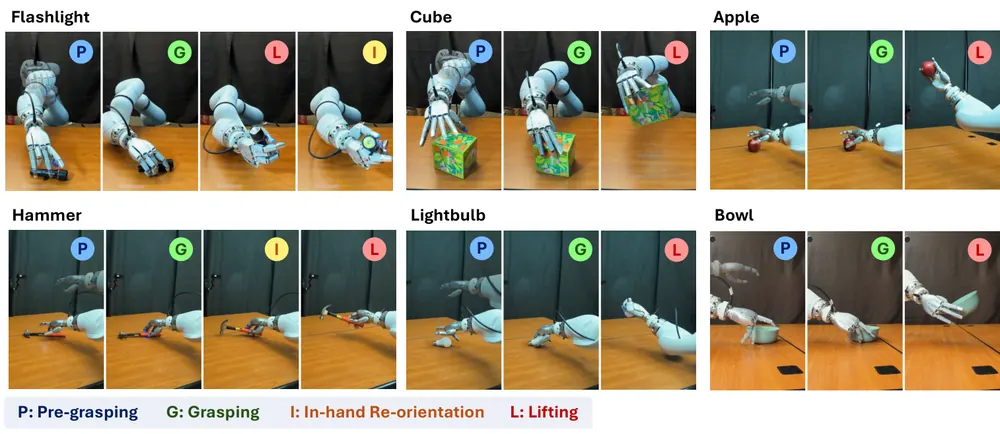
World Action Agent: Harnessing VLMs for Robot Manipulation via World Action Rehearsal
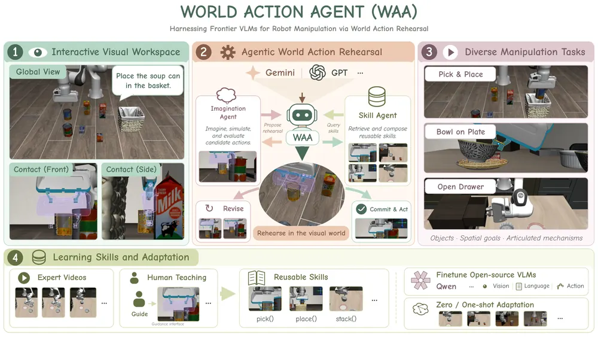
Aim Short to Reach Far: Your Frozen World Model Can Plan Better Than You Think
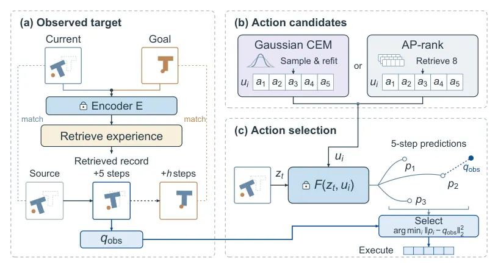
AD-WM: Action-Discriminative World Models for Counterfactual Model Predictive Control
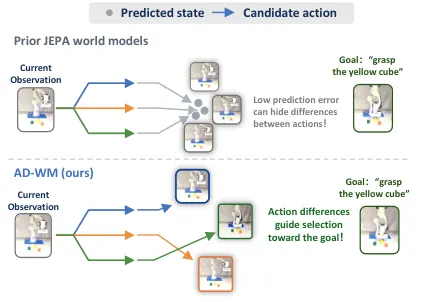
OCC4M: Object-Centric 4D Memory for Spatiotemporal Reasoning in Long-Horizon Manipulation
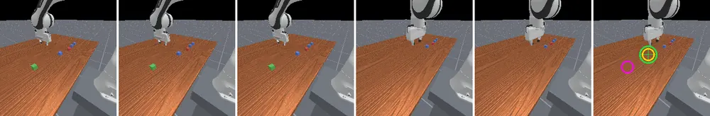
Self-Adaptive VLA for Robust Robot Deployment
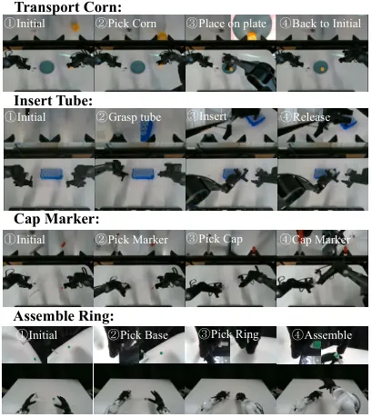
Direction-Scale Decomposition in Action Representation: Rethinking What to Tokenize for Vision-Language-Action Models
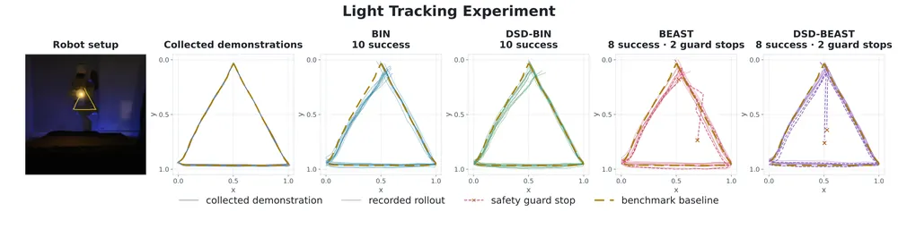
Training Object Permanence in World Models
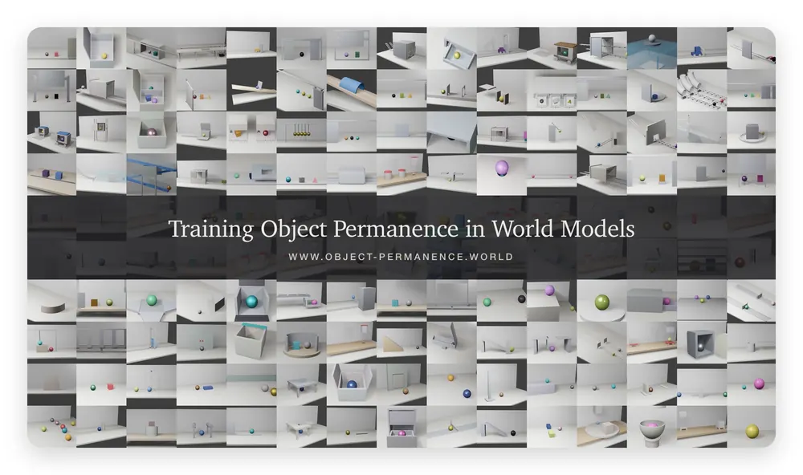
Representation World Model: Learning States, Transition and Executable Plans in Representation
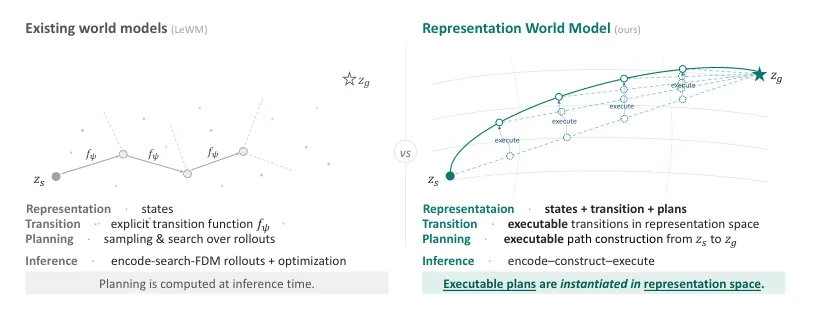
Streaming-WAM: Action-Conditioned World-Action Model for Asynchronous Robot Manipulation
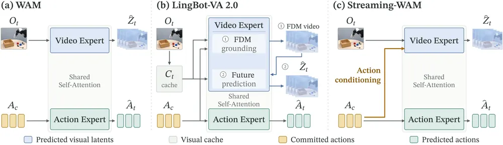
ActGaze: Learning Action-Grounded Gaze through Counterfactual Visual Interventions for High-Precision Manipulation
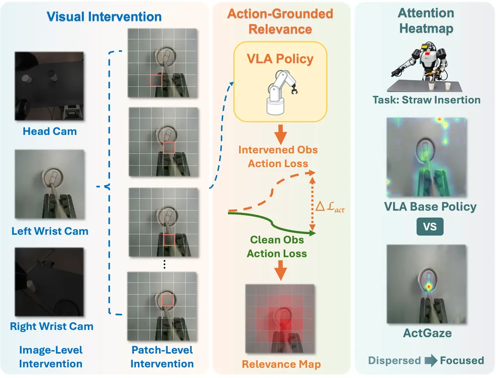
Know Your Body: A Harness for Direct and Self-Improving Robot Control with VLMs
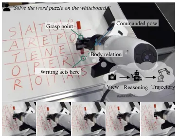
Learning from Mixed-Quality Deployment Experience for Robot Manipulation
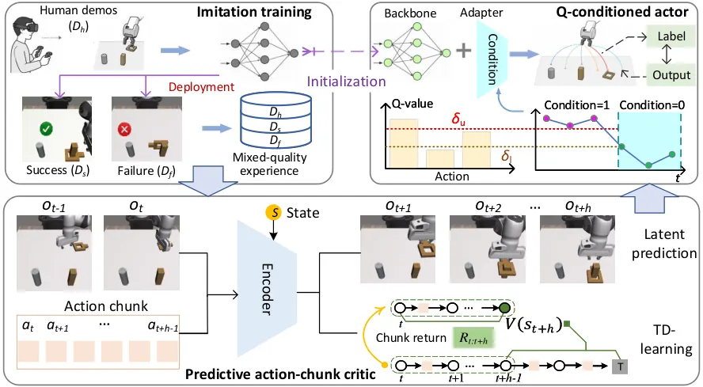
DeltaWAM: Delta World Action Models for Bimanual Manipulation
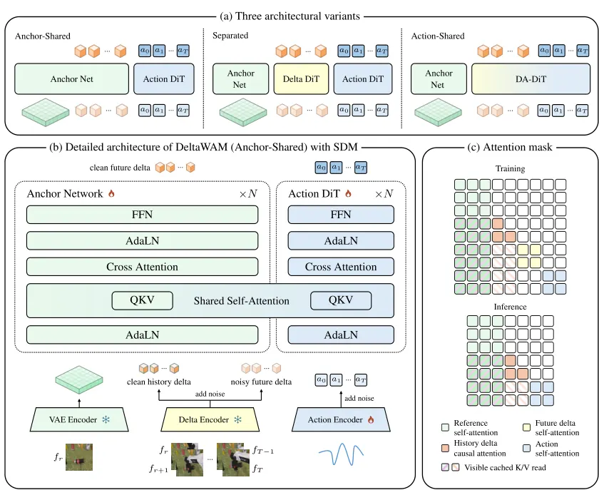
Uncertainty-Gated Exploration Noise Suppresses Task Collapse in Online RL Fine-Tuning of a Flow-Matching Vision-Language-Action Policy
오늘의 핵심 연구 트렌드 종합
- world model에서 search 구조 자체를 바꾸는 흐름 — Representation World Model은 현재-목표 latent를 선형보간한 경로에 inverse dynamics만 적용해 CEM 같은 rollout search를 통째로 없앰. Aim Short to Reach Far는 frozen world model이 final-goal distance만 채점하면 영원히 못 움직이는 반례를 증명하고, 기록된 경로에서 중간 target을 검색하는 방식으로 우회함.
- counterfactual 신호를 학습 신호로 직접 쓰는 흐름 — AD-WM은 factual prediction 정확도와 counterfactual action 구별 능력이 별개임을 지적하고 action recovery head로 MPC용 latent를 제약함. ActGaze는 이미지 영역을 지우고 action loss 변화를 재는 counterfactual intervention으로 gaze supervision을 만듦. 둘 다 counterfactual reasoning을 진단이 아니라 학습 신호로 씀.
- 배포 후 자기 경험만으로 스스로 보정하는 흐름 — PACL은 사람 개입 없이 쌓인 성공·실패 혼합 rollout으로 offline RL 후처리를 함. Self-Adaptive VLA는 하드웨어 오정렬을 자기 실패 rollout으로 감지해 AdaLN(adaptive layer normalization) 주입으로 보정함. human correction 없는 test-time self-improvement가 공통 문제 설정으로 자리잡음.
- world-action model의 실시간 효율화 흐름 — DeltaWAM은 delta token 압축으로, Streaming-WAM은 committed action을 조건으로 쓰는 방식으로 world-action model의 추론 비용을 줄임. 두 논문 다 성능 향상보다 속도-정확도 trade-off 개선이 핵심임. novelty는 기존 요소의 재조합 수준으로 스스로도 인정함.
- VLA online RL fine-tuning의 숨은 실패 모드 — Uncertainty-Gated Exploration은 online RL 중 평균 성공률은 멀쩡해 보여도 개별 task가 완전히 무너지는 task collapse를 정의하고 측정 프로토콜을 제시함. 제안한 controller도 behavior cloning baseline을 못 넘었다는 부정적 결과를 그대로 보고함.
- persistent object-centric memory로 장기 조작을 지원하는 흐름 — OCC4M은 물체별 world-frame 좌표를 유지하는 4D memory를 VLM이 episode당 한 번만 조회하게 해 가려진 물체·뒤섞인 컨테이너 문제를 풂. "과거 위치는 고정, 현재 위치는 live 추적"이라는 분리가 여러 논문의 memory 설계에서 반복적으로 등장함.
유망 연구 방향 및 프로젝트 제안
Elite-regret 기반 world model 평가 지표를 test-time planning 진단에 도입 - Research question: factual prediction error나 전체 순위 상관 대신, planner가 실제로 쓰는 elite 후보군(예: CEM이 매 iteration 추리는 상위 k개 후보) 기준 regret이 closed-loop 성공률을 더 잘 예측하는가. - 접근·novelty: AD-WM의 elite-regret 지표(R_k, R̄_k)를 누리랩의 world model 실험(factual MSE만 보고하던 관행)에 이식하고, 여기에 실패 rollout까지 포함한 elite-regret 분포를 추가해 실패 직전 상태에서 지표가 무너지는지 검증. - 왜 지금·경쟁 prior works: AD-WM은 Franka pick-and-place 하나에서만 검증했고 실패 조기 진단으로는 못 씀 — 이 gap을 채우는 방향. - risk·target venue: 새 지표의 일반화가 다른 world model 아키텍처에서도 성립하는지가 관건. CoRL 또는 RSS 워크숍용 실험으로 먼저 검증 가능.
Counterfactual attribution을 실패 원인 localization으로 확장 - Research question: 실패 직전 프레임에 counterfactual visual intervention을 걸었을 때 action loss가 크게 뛰는 영역이 실제 실패 원인과 일치하는가. - 접근·novelty: ActGaze의 masking/blurring 기반 attribution을 성공 gaze 학습이 아니라 실패 사후 진단에 적용. AD-WM의 action recovery 신호와 결합해 정상 행동과 실패 행동의 counterfactual 차이를 명시적으로 대조. - 왜 지금·경쟁 prior works: ActGaze는 성공 데이터로만 gaze를 학습해 실패 진단에는 안 씀. Embodied Interpretability·AGRA 등 동시기 연구도 사후 분석에 그침 — 진단을 실시간 recovery trigger로 연결하는 논문은 아직 없음. - risk·target venue: 실패 sample 수가 적어 통계적 유의성 확보가 어려울 수 있음. CoRL 또는 실패 detection 전용 워크숍.
Search 없는 world model planning을 VLA policy에 이식 - Research question: latent interpolation + inverse dynamics로 만든 search-free planning이 VLA policy의 test-time replanning에서도 CEM 기반 방법을 대체할 수 있는가. - 접근·novelty: RWM의 encode-construct-decode 구조를 VLA latent space에 붙이고, 재인코딩된 z_t가 애초 경로에서 벗어나는 정도를 실패 조기 감지 신호로 재사용. - 왜 지금·경쟁 prior works: RWM은 sim 4개 task와 LIBERO-Goal에서만 검증했고 replanning 간격이 길어지면 성능이 98.33%→69.17%로 급락함 — 실로봇·긴 horizon에서의 강건성이 미해결. - risk·target venue: interpolation 전제(직선 경로가 실행 가능하다는 가정)가 접촉 많은 조작에서 깨질 수 있음. CoRL 도전, 실패 시 ICRA로 하향.
Persistent 4D memory와 object-centric 3DGS 결합 - Research question: OCC4M 식 world-frame object memory의 containment/motion 관계를 규칙 기반 threshold 대신 3DGS 기반 표현으로 대체하면 관계 추출 정확도와 실패 복구 성능이 함께 오르는가. - 접근·novelty: OCC4M의 "과거 위치 고정, 현재 위치 live 추적" 분리를 유지하되 각 track을 3D Gaussian cluster로 표현해 occlusion 후 재등장 시 identity 보존을 정량 평가. - 왜 지금·경쟁 prior works: OCC4M은 SAM 3 검출 + 12cm gated matching이라는 hand-tuned rule에 의존해 관계 추출이 deterministic함 — object-centric 3DGS 연구가 이 지점을 대체할 수 있는 명확한 진입점. - risk·target venue: 3DGS 갱신 비용이 실시간 조작에 비쌀 수 있음. CVPR(3D representation 축) 또는 CoRL.
하드웨어 shift를 넘어선 self-adaptive VLA 확장 - Research question: Self-Adaptive VLA의 context-token ensemble 보정이 actuation bias·encoder offset을 넘어 조명 변화·object pose shift 같은 시각적 이상에도 적용되는가. - 접근·novelty: shift-조건부 데이터 자동 생성 파이프라인을 시각적 도메인 shift로 확장하고, world model 기반으로 실패 원인을 명시적으로 추론하는 단계를 추가해 무엇이 왜 틀렸는지까지 설명하도록 함. - 왜 지금·경쟁 prior works: Self-Adaptive VLA는 두 종류의 constant-offset shift만 다루고 카메라 캘리브레이션 등은 미해결로 남김 — 저자도 명시한 gap. - risk·target venue: 시각적 이상은 shift가 벡터로 깔끔히 분리되지 않을 수 있어 직교성 가정이 깨질 위험. CoRL.
오늘 반드시 읽어야 할 논문
- Morphometric Imitation: From Morphology and Contact Aware Hand Retargeting to Sim-to-Real Visuomotor Policy — 사람 hand-object 영상을 robot dexterous manipulation policy로 바꾸는 파이프라인. 실로봇 300회 시도 89.3% 성공까지 검증됐고 오늘 스코어 최고점임.
- World Action Agent: Harnessing VLMs for Robot Manipulation via World Action Rehearsal — action을 실행 전 IK/motion planning으로 rehearsal 검증하는 구조가 failure recovery 연구에 baseline으로 바로 쓸 만함.
- Aim Short to Reach Far: Your Frozen World Model Can Plan Better Than You Think — final-goal distance scoring이 이론적으로 실패할 수 있음을 증명한 반례가 short-horizon reward 설계 논의 전반에 인용할 근거가 됨.
- AD-WM: Action-Discriminative World Models for Counterfactual Model Predictive Control — factual accuracy와 counterfactual action 구별을 분리한 문제의식과 elite-regret 진단 지표가 test-time planning 평가 관행을 바꿀 만함.
- OCC4M: Object-Centric 4D Memory for Spatiotemporal Reasoning in Long-Horizon Manipulation — VLM을 episode당 한 번만 부르고 저수준 제어는 실시간 memory로 다시 연결하는 구조가 robot memory 연구의 실용적 기준점이 됨.
- Direction-Scale Decomposition in Action Representation — action tokenization을 direction/scale로 분해하는 tokenizer-agnostic 표현이 cross-dataset 학습 안정성 문제에 바로 적용 가능함.
- Representation World Model: Learning States, Transition and Executable Plans in Representation — world model에서 forward search를 통째로 없앤 구조라 test-time planning 비용 문제에 직접 대안을 제시함.
- Uncertainty-Gated Exploration Noise Suppresses Task Collapse in Online RL Fine-Tuning — 제안 방법이 baseline을 못 넘었다는 부정적 결과까지 정직하게 보고해, online RL fine-tuning 평가 프로토콜 설계에 참고할 값어치가 있음.
전체 1차 스크리닝 결과 (510편, 점수순) 펼치기
| # | 제목 | 점수 | 🤖 | 분야 | 한 줄 근거 |
|---|---|---|---|---|---|
| 1 | AD-WM: Action-Discriminative World Models for Counterfactual Model Predictive Control | 82 | 10 | World Model | world model이 사실적 예측은 잘해도 행동 간 차이를 구분 못할 수 있다는 문제를 지적하고, action-discriminative 정규화로 counterfactual MPC 성능을 크게 높인 연구임. OGBench-Cube에서 hard-start 성공률을 3.7%에서 52.0%로 올렸고 V-JEPA2·DROID 사전학습 후 실제 Franka pick-and-place 성공률도 42.2%에서 71.1%로 개선함. world model·counterfactual reasoning·실로봇 검증을 모두 갖춘 오늘 배치 최상위 논문임. |
| 2 | DeltaWAM: Delta World Action Models for Bimanual Manipulation | 78 | 10 | World Model | world-action model에서 dense frame 예측 대신 visual delta만 예측해 few-step action 생성을 가속한 bimanual manipulation 연구로 RoboTwin과 실로봇 실험 모두 제시함 |
| 3 | OCC4M: Object-Centric 4D Memory for Spatiotemporal Reasoning in Long-Horizon Manipulation | 78 | 10 | Manipulation | object-centric 4D memory로 장기 조작에서 사라진 물체나 컨테이너 내용물을 추적하고 VLM이 이를 질의해 행동을 선택함. raw-history VLM baseline 대비 end-to-end 성공률이 57.7%에서 88.9%로 크게 앞섬. |
| 4 | Aim Short to Reach Far: Your Frozen World Model Can Plan Better Than You Think | 78 | 9 | World Model | frozen visual world model의 목표거리 기반 스코어링이 우회 경로를 막는 한계를 지적하고 중간 목표를 검색해 넣는 anchored planning을 제안함, Cube·PushT·Reacher·TwoRoom에서 action synthesis 개선을 보여 world model 기반 planning에 직접 기여함 |
| 5 | Training Object Permanence in World Models | 76 | 8 | World Model | 비디오 생성모델에 물체 영속성 같은 핵심 인지 prior를 학습시키는 데이터·벤치마크(WROP)를 구축한 연구로 world model의 물리 이해 한계를 정면으로 다룸. 16B 모델과 150개 인지과제로 실증했고 embodied AI의 물리적 직관 확보에 직접 연결됨 |
| 6 | Direction-Scale Decomposition in Action Representation: Rethinking What to Tokenize for Vision-Language-Action Models | 72 | 10 | VLA | VLA의 pose-increment 액션을 방향과 크기로 분해해 토크나이징하는 새로운 action representation으로 LIBERO·SimplerEnv·실로봇에서 일관된 성능 향상을 보임 |
| 7 | Learning from Mixed-Quality Deployment Experience for Robot Manipulation | 72 | 9 | Manipulation | 배포 중 축적된 성공·실패 혼합 경험으로 robot manipulation 정책을 개선하는 post-deployment 학습 세팅을 제안함, 실패 rollout을 다루는 문제설정이 failure-aware learning·deployment adaptation과 직결됨 |
| 8 | Morphometric Imitation: From Morphology and Contact Aware Hand Retargeting to Sim-to-Real Visuomotor Policy | 72 | 9 | Manipulation | human hand-object interaction을 retargeting-residual RL-distillation 세 단계로 로봇 손 policy에 옮기는 프레임워크. 3개 로봇손·10개 HOI에서 real-world 89.3% zero-shot 성공률을 달성함. |
| 9 | Know Your Body: A Harness for Direct and Self-Improving Robot Control with VLMs | 68 | 9 | VLA | 고정된 VLM에 로봇 body model을 붙여 action-relevant 관계를 query·revise하는 harness 제안. 4개 real-robot task에서 네이티브 harness 대비 완료율이 25%에서 75%로 크게 개선됨. |
| 10 | Streaming-WAM: Action-Conditioned World-Action Model for Asynchronous Robot Manipulation | 68 | 9 | World Model | committed action을 고려해 미래 시각 예측을 수행하는 world-action model로 비동기 로봇 제어를 지원함. LIBERO에서 98.35% 성공률과 Fast-WAM 대비 2.93배 속도 개선을 보임. |
| 11 | ActGaze: Learning Action-Grounded Gaze through Counterfactual Visual Interventions for High-Precision Manipulation | 68 | 9 | VLA | counterfactual visual intervention으로 action prediction에 중요한 영역을 찾아 VLA의 gaze를 학습시키는 방법. 외부 라벨 없이 4개 고정밀 조작 task에서 baseline VLA를 능가함. |
| 12 | Representation World Model: Learning States, Transition and Executable Plans in Representation | 68 | 9 | World Model | world model의 latent representation 자체에 planning을 내재화해 recursive rollout 없이 경로를 직접 구성하는 새 패러다임. continuous control과 조작 benchmark에서 효과를 확인함. |
| 13 | Uncertainty-Gated Exploration Noise Suppresses Task Collapse in Online RL Fine-Tuning of a Flow-Matching Vision-Language-Action Policy | 65 | 9 | VLA | flow-matching VLA의 online RL fine-tuning에서 발생하는 task collapse 현상을 정의하고 uncertainty-gated noise controller로 이를 막음. 세 seed 모두 collapse 없이 유지된 반면 고정·학습형 noise는 실패함. |
| 14 | World Action Agent: Harnessing VLMs for Robot Manipulation via World Action Rehearsal | 65 | 9 | VLA | VLM이 contact view와 action rehearsal을 통해 시각적 workspace 안에서 직접 행동을 결정·수정하는 multi-agent harness. LIBERO-Pro에서 75.6% 성공률로 end-to-end VLA를 능가함. |
| 15 | Self-Adaptive VLA for Robust Robot Deployment | 65 | 9 | VLA | VLA가 자신의 rollout을 context로 활용해 하드웨어 변화(actuation bias 등)에 배포 중 스스로 적응하는 방법. 정밀 조작 4개 task에서 하드웨어 변화 후 기본 정책 성능의 80% 이상을 회복함. |
| 16 | CrossSafe: Towards Cross-Embodiment Latent Safety Filters | 65 | 8 | VLA | 여러 로봇 embodiment에 공유되는 latent safety filter를 Hamilton-Jacobi reachability로 학습해 morphology 조건화함. 5개 bimanual embodiment에서 미학습 embodiment로도 zero-shot 충돌 감소를 보임. |
| 17 | HarnessPAI: An Evolving Harness for Physical AI | 65 | 8 | VLA | 코드를 실행 가능한 진화 가능 인터페이스로 삼아 action model 재학습 없이 perception·reasoning을 보강하는 harness. LIBERO-PRO에서 pi_0.5 대비 61.6점 향상시킴. |
| 18 | AdaHVLA: Adaptive Harnesses for Long-Horizon Vision-Language-Action Execution | 62 | 9 | VLA | 코드 기반 조정 정책을 로봇 경험으로 개선하는 adaptive harness로 VLA의 장기 실행 안정성을 높임. NaVILA-LH 성공률을 22.5%에서 57.5%로 끌어올림. |
| 19 | Beyond Spatial Benchmarks: From Spatial Reasoning to Navigation | 62 | 8 | Navigation | 공간추론 벤치마크 성능이 실제 네비게이션 성능과 괴리됨을 분석하고 spatial-navigation 파운데이션을 단계적으로 특화해 teacher의 공간 사전지식을 student 정책으로 증류한 연구로 VLN에 직접 기여함 |
| 20 | KeyGen: Unsupervised Keypoint based Object-Centric Representations for Category-Level Policy Generalization | 62 | 8 | Manipulation | point cloud에서 unsupervised 3D keypoint를 학습해 category-level policy generalization에 쓰는 object-centric representation. diffusion policy와 결합해 미지 물체에서도 강한 성능을 보임. |
| 21 | Do World Models Make Better Robots? A Survey of Evaluation Benchmarks for Predictive Embodied Intelligence | 62 | 8 | World Model | world model이 VLA보다 실제로 더 나은 로봇을 만드는지 검증하는 벤치마크가 부재함을 지적한 서베이. 160개 벤치마크 중 VLA-world model을 직접 비교하는 것은 7%뿐임을 밝혀 평가 공백을 명확히 함. |
| 22 | GPT-6-Astra Lights Up Embodied Navigation: Evaluation in Zero-Shot Vision-and-Language Navigation in Continuous Environments | 62 | 8 | Navigation | 범용 foundation model(GPT-6-Astra)이 별도 미세조정 없이 monocular RGB만으로 VLN을 수행하는지 평가함. zero-shot R2R-CE 성공률 79.0%로 기존 SOTA를 13.0%p 상회함. |
| 23 | RACaP: Agentic Reasoning, Acting, and Coding as Policies for Evolvable Robot Learning | 60 | 8 | Manipulation | 재사용 가능한 물리 메커니즘을 API로 진화시키고 ReAct로 호출하는 robot agent 프레임워크. LIBERO-90에서 code-as-policy baseline 대비 최대 2.5배 성공률을 보임. |
| 24 | Coding Agents for Generalized Task and Motion Planning Problems | 60 | 8 | Robotics | coding agent(Claude Code, Codex)가 TAMP 문제에 대해 instance 전반에 일반화되는 프로그램을 자체 합성하도록 한 연구. hand-engineered planner 대비 평균 성공률 56-95%로 크게 상회함. |
| 25 | RAPID: Robot Agentic Programming from Demonstrations | 60 | 8 | Manipulation | 단일 human demonstration에서 테스트 가능한 task 명세와 action primitive를 자동 추론해 object-centric relational program을 생성하는 프레임워크. 8개 contact-rich task에서 물체 pose·형태·환경에 대한 일반화를 보임. |
| 26 | An Analysis of Streaming Deep Reinforcement Learning for Adaptive Continual Learning in Robotics | 60 | 7 | RL | streaming RL을 로봇의 continual adaptation에 적용한 첫 분석 연구. quadruped locomotion에서 사전학습 대비 성공률을 최대 90%p 개선했으나 manipulation은 제한적 성능을 보임. |
| 27 | Visual Representation and History Modeling for Navigation World Models | 58 | 8 | World Model | navigation world model에서 시각 표현 선택과 반복 쿼리를 위한 효율적 history 모델링을 체계적으로 비교한 연구로 world model과 navigation을 직접 다룸 |
| 28 | DA-GRD: Decision-Aware Grasp-Relevant Disambiguation for tactile recovery under perception-to-execution mismatches | 58 | 8 | Manipulation | perception-to-execution mismatch 상황에서 tactile probe만으로 grasp을 복구하는 belief 기반 방법. 실제 로봇에서 4.2회 probing으로 71.7% 성공해 failure recovery 주제와 직접 관련됨. |
| 29 | ADM-Planner: LLM-Guided Long-Horizon Planning for Mobile Manipulators with Attention-Enhanced Dynamic Memory | 58 | 8 | Manipulation | LLM 기반 장기 계획에서 오래된 정보와 최신 관측을 분리 관리하는 attention 기반 동적 메모리. 잡음 많은 동적 환경에서 정적 메모리 대비 성공률을 62%에서 100%로 높임. |
| 30 | Robo-Harness K1: Harnessing Robot-Use Agents via Perception Augmentation | 58 | 8 | Manipulation | VLM에 depth·anchor 등 perception 도구를 tool call로 노출해 모델 재학습 없이 3D 정보를 활용하게 함. LIBERO-PRO에서 RGB-only harness 대비 정확도를 크게 높임. |
| 31 | Training-free Behavior Cloning | 58 | 8 | Manipulation | demonstration 검색과 Hankel 기반 action continuation, closed-form 보정을 조합해 end-to-end 학습 없이 policy를 합성하는 새로운 패러다임. pi_0.5와 경쟁력 있으면서 정책 적합 시간을 시간 단위에서 초 단위로 줄임. |
| 32 | Underwater C3-JEPA: An Object-Centric Cross-View World Model for ROV Salvage | 58 | 8 | World Model | contact sensor 없이 multi-view RGB와 제어 신호로 접촉 상태 전이를 latent space에서 예측하는 object-centric world model. 실제 수중 영상에서 held-out 카메라의 물체 상태를 복원함을 검증함. |
| 33 | Rolling-WAM: World Action Models with Rolling Imagination | 58 | 8 | World Model | world action model의 video-action denoising을 여러 replanning 주기에 걸쳐 분산시켜 지연을 줄이는 rolling imagination 기법. 처음부터 다시 denoise하지 않아 4.5배 steady-state 속도 향상을 보임. |
| 34 | Online Sim-to-Real Adaptation via Closed-Loop System Modeling | 58 | 7 | Robotics | policy는 고정한 채 closed-loop 시스템 모델로 reference command만 온라인 적응시키는 sim-to-real 기법. bipedal tracking과 hardware 실험에서 잔여 오차를 줄임. |
| 35 | Outcome-Sensitive Motion Search for Impact-Aware Dexterous Catching | 58 | 7 | Manipulation | 낙하 물체를 부드럽게 받는 dexterous catching에서 teacher 실패를 기하학적으로 보정하는 outcome-sensitive motion search를 제안함. IL student가 privileged RL teacher를 능가함. |
| 36 | OREN-X: Octree Residual Network for Real-Time Multi-Modal Mapping | 58 | 7 | 3D Vision | octree 하나로 geometry·radiance·vision-language feature를 통합 저장하는 실시간 multi-modal mapping. 단일 모달 baseline 대비 open-vocabulary mIoU를 71% 개선함. |
| 37 | RoboRecover: Benchmarking Robot Policy Recovery under Execution Deviations | 55 | 8 | Manipulation | 실행 중 발생하는 off-nominal 중간 상태에서 policy의 recovery 능력을 측정하는 새 benchmark. RoboTwin·LIBERO 2000 시나리오로 초기상태 성능과 recovery 성능이 무관함을 보임. |
| 38 | AquaMend: Minimal Re-probing and Conditional Rollback for Latent-Belief Failures in Embodied Agents | 55 | 8 | Embodied AI | embodied agent의 latent belief 오류에 대해 re-probing·rollback·continuation을 expected-loss 기준으로 비교하는 프레임워크. 32개 시나리오 중 28건을 복구했으나 기존 DTT 대비 통계적 유의차는 없음. |
| 39 | Seeing Is Not Measuring: Tool-Augmented Metric Spatial Reasoning for Vision-Language Models | 55 | 7 | Embodied AI | 소형 VLM에 3D 탐지·깊이 추정·기하 솔버를 도구로 결합해 절대 거리·방향 추론을 크게 개선한 연구로 embodied spatial reasoning에 직접 닿아 있음 |
| 40 | CALM: Current Aligned Link Manipulation for Single Arm Oversized Object Lifting | 55 | 7 | Manipulation | 모터 전류를 joint load 신호로 써서 whole-arm 방식으로 대형 물체를 들어올리는 contact-rich 조작 프레임워크. 실물 로봇 30회 시행 중 73.3% 성공함. |
| 41 | DAWN: Noise-Robust Quadruped Parkour via Depth-Denoising World Models | 55 | 7 | Robotics | noisy depth를 clean depth로 복원하도록 world model을 학습시켜 quadruped parkour의 노이즈 강건성을 확보함. 별도 필터 튜닝 없이 계단·간극을 통과함. |
| 42 | EgoSpeedUp: Transferring Human Manipulation Tempo to Robot Policies | 55 | 7 | Manipulation | 사람의 조작 속도(tempo)를 로봇 시연에 전이해 imitation learning 속도를 높이는 방법. real-world 2개 task에서 성공률이 25%p 향상되고 실행시간이 36.5% 단축됨. |
| 43 | Self-Supervised Anchoring of Fingertip Sensing to Proprioception and Proactive Actions for Robot Imitation Learning | 55 | 7 | Manipulation | fingertip의 proximity·tactile 신호를 proprioception과 self-supervised로 정렬해 imitation learning에 활용함. naive하게 추가하면 오히려 성능이 떨어지는 문제를 해결함. |
| 44 | BeyondRetarget: Learning Executable Humanoid Motions Directly from Monocular Video | 55 | 7 | Embodied AI | 명시적 human motion representation 없이 monocular video에서 곧바로 humanoid motion으로 매핑하는 end-to-end 프레임워크. retargeting 단계의 오차 전파 문제를 없애 실행 성공률을 높임. |
| 45 | Res-HIL: Human-Guided Residual Reinforcement Learning for Sample-Efficient Dexterous Manipulation | 55 | 7 | Manipulation | 고정된 imitation policy 위에 human-in-the-loop residual RL로 보정하는 프레임워크. 20개 시연만으로 5배 많은 시연으로 학습한 imitation policy를 능가함. |
| 46 | Error- and Prediction-Driven Motor Learning in the Cortico-Cerebellar Loop | 55 | 6 | Robotics | 지연된 감각 피드백을 보상하기 위해 예측 표현과 내부 피드백을 결합한 cortico-cerebellar 모델을 제안함, forward prediction 기반 운동 제어라 로봇 delay compensation·world model과 직결되는 신경과학 영감 연구임 |
| 47 | Robots That Take Initiative: A Framework for Building and Evaluating Proactive Robots | 55 | 6 | Embodied AI | proactive robot assistance를 세 수준으로 정식화하고 closed-loop 평가에서 기존 SOTA가 무너짐을 보임. GAP 방법은 수동 관찰만으로 사용자 목표를 예측해 강건함. |
| 48 | Koopman-Accelerated Model-Based Diffusion for Real-Time Robot Control | 55 | 6 | Robotics | Koopman lifting으로 model-based diffusion trajectory 최적화를 실시간화한 연구. 50ms 제어 주기 내 14.7ms로 계획을 완료하고 물리 매니퓰레이터 추적 실험도 수행함. |
| 49 | TactileStep: Sole Tactile Learning for Regulating Foot-Terrain Interaction in Humanoid Locomotion | 55 | 6 | Robotics | 발바닥 압력 센싱을 humanoid locomotion에 결합해 접지 충격을 줄이는 프레임워크. Unitree G1 실험에서 터치다운 힘을 최대 48.8% 감소시킴. |
| 50 | PolyUMI: Accessible Visual-Tactile-Audio Data Collection for Object Inference and Manipulation | 52 | 7 | Manipulation | 무선 핸드헬드 그리퍼로 vision-tactile-audio를 동시 수집하고 로봇에 그대로 전이하는 플랫폼. VisTA 정책이 contact-rich task에서 기존 multimodal policy와 경쟁력 있음을 보임. |
| 51 | Body-Grounded Replanning for Physically Adaptive Manipulation | 52 | 7 | Manipulation | 관절 부하 등 로봇 내부 물리 상태를 LLM이 해석해 상위 수준 조작 전략을 재계획하는 방법. reaching task에서 물리적 부담을 줄이면서 성공률을 유지함. |
| 52 | Continuous Online Fault Detection for Mobile Robots via Adaptive Edge Models | 50 | 7 | Robotics | edge 환경에서 teacher-student distillation으로 실시간 fault detection을 수행하는 연구. 미지 고장 분포에서 온라인 적응으로 VUS-PR을 0.26에서 0.75로 회복함. |
| 53 | Real-Time Force Regulation for Whole-Hand Dexterous Grasping | 50 | 7 | Manipulation | 손 전체 접촉이 동적으로 변하는 상황에서 실시간으로 force distribution을 재계산하는 whole-hand grasping 제어. 27자유도 실물 arm-hand에서 외란 후 grasp을 유지·회복함. |
| 54 | Faster Visuomotor Policy Learning on Action Manifolds via Riemannian MeanFlow | 50 | 7 | Manipulation | 로봇 action manifold 위에서 flow map consistency로 한 번의 네트워크 평가만으로 action을 생성하는 Riemannian MeanFlow policy. 기존 diffusion/flow policy와 경쟁력 있는 성능을 더 낮은 샘플링 비용으로 달성함. |
| 55 | FlyCNS: Connectome-Grounded Information Organization for Communication-Constrained Embodied Control | 50 | 6 | Embodied AI | 초파리 connectome 구조를 본뜬 분산 정보 조직 프레임워크로 통신 제약 하 whole-body 제어를 학습함. quadruped 시뮬레이션에서 통신량 21-22%만으로 tracking 성능을 유지함. |
| 56 | MorphIK: Morphology-Conditioned Neural Inverse Kinematics for Unknown Robots | 50 | 6 | Robotics | 미지의 revolute 로봇 형태에 대해 flow-matching으로 inverse kinematics를 푸는 모델. 합성 데이터만으로 학습해 unseen 로봇에서도 5cm 정밀도를 달성함. |
| 57 | TRACE: Interactive Bi-Directional Tracing of Monochrome Cables Amid Clutter | 48 | 6 | Manipulation | 단색 케이블을 양방향으로 추적하며 interactive perception으로 교차를 해소하는 방법. 기존 최강 baseline 대비 추적 정확도를 60%에서 90%로 크게 높임. |
| 58 | Free the Language Model From the Vision Encoder: Semantic Serialization as a Perception Interface for Small Language Models | 48 | 6 | VLA | vision을 언어모델에서 완전히 분리하고 perception 결과를 텍스트로 직렬화해 작은 LLM으로 embodied QA를 수행하는 구조. LLM 크기를 줄여도 perception-bound 성능을 유지함을 보임. |
| 59 | M3GD: Multi-Modal Multi-View Geometric Diffusion for Camera--LiDAR Novel View Synthesis | 48 | 6 | 3D Vision | 카메라와 LiDAR 특징이 투영 후 공간 구조를 공유함을 이용해 별도 cross-modal translator 없이 novel view synthesis를 수행함. 이미지 전용 baseline 대비 RGB·depth 합성 품질을 개선함. |
| 60 | Contact as a Decision Variable: Capability-Tradeoff Contact Selection for Legged Loco-Manipulation | 48 | 6 | Robotics | legged loco-manipulation에서 환경 접촉 선택을 residual wrench·reach·mobility의 trade-off로 정식화한 방법. 실물 Go2+arm에서 지면 전용 대비 우수한 접촉 선택을 3배 빠르게 수행함. |
| 61 | Echo in the Steps: Learning Perceptive Humanoid Parkour with Gated Memory | 48 | 5 | Robotics | gated memory로 humanoid parkour의 발 디딤 선택을 개선한 연구. depth 관측만으로 희소한 foothold 환경에서 성공률을 높였으나 기존 perceptive locomotion의 확장에 가까움. |
| 62 | TrackEverything: Long Horizon Dense Tracking via De-Duplicating 3D Scene Representations | 46 | 6 | 3D Vision | 비디오를 3D world coordinate의 지속적 scene track으로 표현해 voxel 기반 중복제거로 all-frame dense point tracking을 1000프레임 이상까지 확장한 연구로 object-centric 4D 표현으로 로봇 조작·추적에 활용 가능함 |
| 63 | UpDown-SC: Gravity-Canonicalized Dual-Envelope Scan Context for Indoor LiDAR Place Recognition | 45 | 6 | Navigation | 중력 정렬 이중 envelope로 실내 LiDAR place recognition을 개선한 training-free descriptor로 loop closure·relocalization에 바로 쓰일 수 있는 navigation front-end임 |
| 64 | ReVNM: Learning-Based Visual Navigation from a Remote Camera | 45 | 6 | Navigation | 원격 감시 카메라 하나로 사전 지도 없이 navigation하는 VNM. exocentric-to-egocentric depth 예측 모듈을 추가한 수준의 확장임. |
| 65 | Decoupled Early Exits for Task-Dependent Compute Allocation in Flow-Matching VLAs | 45 | 6 | VLA | VLA의 backbone·action expert 깊이와 denoising step을 태스크별로 조절 가능한 축으로 노출한 early-exit 기법. latency를 79.2% 줄이면서 성공률도 5.6% 향상시킴. |
| 66 | From Target Selection to Digging: A Learning-Based Framework for Continuous Autonomous Excavation | 45 | 6 | Manipulation | 굴착기의 target selection과 digging을 RL·IL로 분리 학습한 연속 굴착 프레임워크. 실물 축소 굴착기에서 payload를 2.68kg에서 6.52kg으로 늘림. |
| 67 | From Passive Execution to Active Exploration: Agentic Embodied Manipulation in Realistic Environments | 42 | 6 | Manipulation | planning-perception-execution 3모듈로 능동 탐색하며 조작하는 agentic 프레임워크. CVPR 챌린지 1위이나 기존 모듈들의 조합 성격이 강함. |
| 68 | CAMP: Cooperative Arm-Hand Motion Planning in Constrained Spaces | 42 | 5 | Manipulation | 제약 공간에서 arm-hand 동시 모션 플래닝을 hand fiber 개념으로 구조화한 고전적 planner. 학습 기반이 아닌 최적화 중심 engineering 기여임. |
| 69 | ReVAMP: Vector-Accelerated Motion Planning for Kinematically-Constrained Systems via Reparameterization | 42 | 5 | Robotics | analytic IK로 reparameterize해 제약이 있는 고차원 motion planning을 벡터화하는 방법. 기존 최고 성능 대비 최대 10배 빠른 계획 생성이라는 engineering 기여임. |
| 70 | Retrieve-to-Localize: Bridging Large Language Models and LiDAR Geometry for Spatial Grounding | 40 | 6 | Embodied AI | LLM의 언어 사전지식으로 복합 공간 질의를 해석해 LiDAR 기하에서 타깃 좌표를 직접 회귀하는 spatial grounding 연구로 자율주행·로봇의 언어 기반 위치추정에 바로 적용 가능함 |
| 71 | SplatLabel: Pseudo-Labelling through 4D Gaussian Splatting | 40 | 6 | 3D Vision | 4D Gaussian 표현으로 동적 객체의 궤적과 생애주기를 모델링해 LiDAR 세그멘테이션과 semantic occupancy를 자동 생성하는 pseudo-labelling 파이프라인으로 로봇의 동적 장면 매핑에 활용 가능함 |
| 72 | IronViT: Toward Efficient Generalist Visual Representation Learning | 40 | 5 | Multimodal | 여러 specialist를 단계적으로 증류해 고해상도에서 효율적인 generalist vision encoder를 만든 연구로 robotic learning을 포함한 평가에서 강한 성능을 보여 로봇 정책의 비전 백본으로 참고할 만함 |
| 73 | OA-MPPI: Occlusion-Aware Model Predictive Path Integral Control for UAV Flight | 40 | 5 | Control | UAV용 occlusion-aware MPPI 확장으로 가려진 영역에서 나타날 수 있는 agent를 고려함. 기존 MPPI에 occlusion boundary penalty를 추가한 수준의 engineering 기여임. |
| 74 | Sim-to-Real Aware End-to-End Learning Environment for Micromobility | 40 | 5 | World Model | 특정 micromobility 차량(WHILL)에 맞춘 sim-to-real 학습 환경과 DreamerV3 기반 world model 정책. 적용 범위가 좁고 novelty는 제한적임. |
| 75 | WRAP: Fixtureless Wrench-aware Multi-Robot Assembly Planning | 40 | 5 | Manipulation | 고정 지그 없이 여러 로봇이 힘을 분담해 조립하는 wrench-aware 플래너. 고전적 탐색·최적화 기반 engineering 기여임. |
| 76 | Coupled State-Space Modelling, Control, and Policy Distillation for Hybrid Rigid-Pneumatic Manipulators | 40 | 5 | Robotics | 강체-공압 하이브리드 매니퓰레이터의 결합 동역학을 모델링하고 MPC를 신경망 정책으로 distill함. decoupled PID 대비 2.5배 정밀한 추적을 달성함. |
| 77 | Markerless Multi-Modal Autonomous Robotic Inspection of Large Space Structures | 40 | 5 | 3D Vision | 우주 구조물을 markerless로 검사하는 multimodal(RGB-D·열화상·LiDAR) 로봇 파이프라인. NeRF 기반 재구성을 활용한 응용 통합 연구임. |
| 78 | UCON: Uncertainty-aware Navigation with Historical Re-association in Dynamic Environments | 38 | 5 | Navigation | 동적 환경에서 과거 point cloud로 유실된 타겟을 재연결하는 uncertainty-aware navigation. 예측 공분산을 trajectory 최적화에 직접 결합함. |
| 79 | Pairwise Approximation Can Select the Wrong Multi-Robot Plan | 38 | 5 | Robotics | 다중 로봇 계획 선택 시 pairwise 근사가 잘못된 계획을 고를 수 있음을 실증한 연구. coverage planning에 국한된 분석적 기여임. |
| 80 | HelloWorld: Towards Practical Applications of Generative Driving World Models | 38 | 4 | World Model | ego pose·HD map·3D box로 제어 가능한 driving world model 시스템으로 world model 설계 원리는 참고할 만하나 자율주행 특화이며 robot manipulation과는 거리가 있음 |
| 81 | RoboLDA: A Probabilistic Generative Model for Uncovering Embodied Hierarchical Structures in Voxel-based Soft Robots | 38 | 4 | Robotics | voxel 기반 soft robot의 성공 사례에서 task-robot-organ-voxel 계층 구조를 Bayesian 모델로 추출함. zero-shot 설계가 진화 알고리즘 대비 평균 106.4% 성능을 냄. |
| 82 | Generative Evolutionary Design of Voxel-Based Soft Robots with Provable Optimality | 38 | 4 | Robotics | 생성 모델과 estimation-of-distribution algorithm으로 voxel soft robot 설계를 최적화하며 이론적 수렴 보장을 제공함. soft robot 형태 최적화에 국한된 기여임. |
| 83 | Beyond Static Graph World Models: Learning Stochastic Latent Dynamics over Evolving Topologies | 38 | 2 | World Model | 위상이 변하는 그래프 환경의 stochastic world model을 제안함, world model 주제이나 소셜·관계 그래프 대상이라 embodied 적용과는 거리 있음 |
| 84 | FounRef: Robust, Structure-Preserving, and Fast Metric Refinement of Frozen Monocular Foundation Priors with Sparse Anchors | 36 | 4 | 3D Vision | 고정된 monocular foundation depth prior를 sparse LiDAR anchor로 metric 보정하는 training-free 방법으로 빠르고 도메인 강건한 dense metric depth를 제공해 로봇 인식 파이프라인에 활용 가능함 |
| 85 | A Support-Enhanced Granular-Jamming Gripper for RL-based Grasping with Continuum Manipulators | 35 | 5 | Manipulation | 연속체 매니퓰레이터용 granular-jamming gripper 하드웨어와 RL reaching controller 결합 연구. 하드웨어 설계가 중심인 니치 연구임. |
| 86 | Fly, Drive, Reconfigure: A Modular Reconfigurable Aerial-Ground Platform for Field Operations | 35 | 4 | Robotics | 공중-지상 모듈이 물리적으로 재결합하는 heterogeneous 로봇 플랫폼 하드웨어 연구. field 실험 중심으로 학습 기반 기여는 크지 않음. |
| 87 | Anthropomimetic Soft Robotic Forearm with Independently Articulated Carpal Bones Enabling Human-Like Adaptive Stiffness Modulability | 35 | 4 | Robotics | 인체 손목 해부구조를 모사한 소프트 로봇 팔뚝으로 강성 변조 메커니즘을 규명한 하드웨어 연구. 학습 요소 없는 생체역학 분석임. |
| 88 | Temperament Engineering: Designing Strategic Behavioural Diversity in Robot Swarms | 35 | 4 | Robotics | 동물의 기질(temperament) 개념을 스웜 로봇 설계 변수로 제안하는 관점 논문. 실험적 검증 없는 개념적 프레임워크 제안임. |
| 89 | Certified Predictive Value-of-Advice Gating for Cost-Aware Language-Model Guidance in Reinforcement Learning | 35 | 3 | RL | 언어모델 조언을 요청할지를 비용 대비 가치로 결정하는 certified gating 기법을 제안함, language feedback 기반 RL 주제와 맞닿아 있으나 검증이 추상 태스크에 그침 |
| 90 | Temporal Gradient Inversion for Private Trajectory Reconstruction in Embodied Reinforcement Learning | 35 | 3 | RL | embodied RL의 gradient에서 trajectory를 복원하는 privacy attack 연구. embodied 맥락이지만 robot learning 방법론이 아니라 보안 공격에 초점을 둠. |
| 91 | Jev-Mobile: Jev as an Executor for Mobile GUI Agents | 35 | 3 | Multimodal | VLM은 저빈도로 목표만 지정하고 빠른 실행 모델이 고빈도로 액션을 고르게 분리한 모바일 GUI 에이전트 Jev-Mobile임. 고수준 계획과 저수준 실행을 분리하는 구조가 VLA의 계층적 제어와 닮았으나 모바일 UI 대상이고 물리 로봇은 아님. |
| 92 | RD-JEPA: Predictive latent pretraining for few-trajectory transfer across reaction--diffusion equations | 35 | 2 | World Model | JEPA 구조로 reaction-diffusion PDE를 사전학습해 소수 궤적만으로 새로운 방정식에 적응시키는 연구임. predictive latent 학습이라는 점에서 world model과 방법론이 닿아 있으나 대상이 PDE 서러게이트라 로봇 적용은 아님. |
| 93 | PoEM: Predicting RL Outcomes from Existing Policies | 35 | 1 | LG | post-trained 모델들의 log-policy 조합으로 새 reward에 대한 RL 결과를 예측하는 프레임워크. 아이디어는 새롭지만 robotics 적용 사례는 없음. |
| 94 | Self-Play Pretraining with Zero Data | 35 | 0 | LG | 데이터 없이 생성자와 학습자가 self-play로 사전학습 데이터를 발견하게 하는 새로운 패러다임임. Solomonoff induction에서 착안한 독창적 아이디어지만 자연어 LM 대상이고 로봇 적용은 없음. |
| 95 | PePESeg3D: Perception Prior Enhances Multi-Scale Segmentation for 3D Gaussian Splatting | 33 | 3 | 3D Vision | 3DGS 멀티스케일 세그멘테이션에 perception prior를 결합한 연구로 object-centric 3D 표현과 맞닿아 있으나 응용은 2D foundation model mask 활용에 그침 |
| 96 | Simple Torque-Observation Alignment for Zero-Shot Sim-to-Real Grasping with a Direct-Drive Gripper | 32 | 4 | Manipulation | direct-drive gripper의 torque 관측을 sim-real 정렬하는 간단한 보정 기법. zero-shot grasping에서 100% 성공을 보였으나 좁은 범위의 실용적 보정에 그침. |
| 97 | A Simple Gripper Interface for Simulator-Agnostic Cloth Manipulation | 32 | 4 | Manipulation | 옷감 조작을 위한 단순화된 gripper 접촉 모델로 시뮬레이터 독립적 구현을 제공함. positional constraint 기반의 실용적 engineering 기여임. |
| 98 | Towards An LLM-Driven Unified Conversion Framework for BT and FSM in Autonomous Intelligent Systems | 32 | 4 | Embodied AI | LLM으로 FSM과 behavior tree를 상호 변환하는 프레임워크임. 서비스 로봇 행동 모델링과 맞닿아 있으나 핵심은 모델 변환 알고리즘이고 학습 기반 정책은 아님. |
| 99 | Online Task Adaptation via Self-Organisation | 32 | 2 | RL | gradient 없이 meta-learned self-organizing neural cellular automaton으로 온라인 태스크 적응을 시도함, test-time adaptation 아이디어이나 robot 적용 없이 toy task 검증만 있음 |
| 100 | SARFusion: Scene-Aware Routing Fusion for Robust Camera-LiDAR 3D Object Detection | 30 | 4 | 3D Vision | 카메라-LiDAR 융합에서 신뢰도 기반 branch routing으로 손상된 센서에 강건한 3D 객체 탐지를 하는 자율주행 연구로 로봇 지각과 인접하나 도메인은 주행에 한정됨 |
| 101 | STRAND: Benchmarking and Improving Object-Centric Spatio-Temporal Monitoring in Video Large Language Models | 30 | 4 | Video | 비디오 LLM이 객체 정체성·상태·관계를 시간에 걸쳐 지속 추적하지 못하는 문제를 세부질문 분해로 진단한 벤치마크로 object-centric 표현과 robot memory에 참고할 만하나 도메인은 일반 비디오임 |
| 102 | TAPESIM: Efficient Simulation of Adhesive Tape Dispensing for Robotic Manipulation | 30 | 4 | Manipulation | 테이프 디스펜싱 시뮬레이터로 감김부만 변형 가능하게 모델링해 속도를 높임. 로봇 조작 자체보다 시뮬레이션 도구 성격이 강함. |
| 103 | Design and Evaluation of LLM Chaining-Based Task Planning for General Purpose Service Robots | 30 | 4 | Robotics | LLM chaining으로 서비스 로봇 task planning의 prompt 길이를 줄인 연구. 실행 단계 실패가 병목임을 재확인한 수준의 engineering 기여임. |
| 104 | A Tendon-Driven Robotic Jellyfish with Constrained Soft Actuation and Depth Control via Reinforcement Learning | 30 | 4 | Robotics | tendon 구동 젤리피시 로봇의 소프트 액추에이터와 RL 깊이 제어. 하드웨어 설계가 중심인 니치 연구임. |
| 105 | Dense-Joint-Based Obstacle-Aided Locomotion with a Joint-Repositionable Snake Robot | 30 | 4 | Robotics | joint 밀도가 obstacle-aided locomotion에 미치는 영향을 비교한 뱀 로봇 하드웨어 실험. 학습 기법 없는 기계적 비교 연구임. |
| 106 | PlenoCI: Plenoptic CharacterIstics for View Dependence Aware Change Classification | 30 | 3 | 3D Vision | 3DGS의 plenoptic 미분을 이용해 장면 변화를 검출하는 방법으로 로봇의 장기 매핑·변화 감지에 참고할 만하나 이 논문 자체는 그래픽스 벤치마크 중심임 |
| 107 | WildHSR: Metric Feed-Forward 4D People-Scene Reconstruction from a 3D Foundation Model | 30 | 3 | 3D Vision | up-to-scale 3D foundation model에 metric scale과 인물 identity를 경량 어댑터로 추가한 4D 사람-장면 재구성 연구로 사람 중심 3D 인식이지만 로봇 조작과는 거리가 있음 |
| 108 | FMCW-LIO: A Doppler LiDAR-Inertial Odometry | 30 | 3 | Robotics | Doppler LiDAR의 속도 측정을 활용해 동적 점을 제거하는 LiDAR-inertial odometry 연구. SLAM 정확도 개선에 국한된 engineering 기여임. |
| 109 | PUBG Ally: A Conversational Embodied Agent as an AI Teammate | 30 | 3 | Embodied AI | PUBG 게임 안에서 음성으로 소통하며 함께 플레이하는 embodied 에이전트 Ally를 대규모 실서비스로 검증한 연구임. embodied·실시간 행동 조율 틀은 참고할 만하나 가상 게임 캐릭터이고 물리 로봇은 아님. |
| 110 | Back to the Definition: Estimating Step-Level Advantages via Trajectory Graphs for Agentic Reinforcement Learning | 30 | 2 | RL | agentic RL에서 궤적을 그래프로 합쳐 스텝 단위 advantage를 벨만 반복으로 재정의한 credit assignment 방법으로, long-horizon 정책학습 일반 원리로서 로봇 RL에도 원용 가능함 |
| 111 | C3M: Cross-Session Multimodal Memory Maintenance for Long-Horizon Tasks | 30 | 2 | Multimodal | 세션을 넘나드는 텍스트-이미지 증거를 보존하며 압축하는 멀티모달 메모리 구조 C3M임. long-horizon 메모리라는 점에서 robot memory와 접점이 있으나 로봇 실험은 없음. |
| 112 | Beyond Compression: Training Latent Representations for Stable Long-Horizon Rollout in Neural Surrogate Solvers | 30 | 1 | LG | 물리 시뮬레이션용 latent surrogate solver 안정성 연구로 robotics 관련성 낮음. reconstruction 목적의 latent representation이 장기 rollout에 부적합함을 보이고 훈련 기법으로 개선함. |
| 113 | Ego-Exo4D Human Meshes Dataset: 4D Human Motion Reconstruction for Ego-Exo Captures | 28 | 5 | Embodied AI | Ego-Exo4D의 희소한 3D 포즈를 조밀한 4D 인간 동작으로 재구성한 데이터셋과 파이프라인 공개로 embodied skill learning 자원이지만 새로운 방법론 제안 없이 데이터셋 릴리스에 그침 |
| 114 | Looks the Same, Answers Differently: Flip-Direction Steering for Robust Vision-Language Reasoning | 28 | 3 | Multimodal | 이미지 변형에 따른 VLM 답변 flip을 활성화 공간에서 교정하는 방법으로 벤치마크에 robot-scene understanding이 포함되나 핵심 기여는 일반 VLM robustness임 |
| 115 | Free-Init: Scan-Free, Motion-Free, and Correspondence-Free Initialization for Doppler LiDAR-Inertial Systems | 28 | 3 | Robotics | Doppler LiDAR와 관성센서만으로 scan-free 초기화를 수행하는 프레임워크. SLAM 초기화 문제에 국한된 기여임. |
| 116 | Policy Complexity, Reaction Time, and Bounded Rationality in Reinforcement Learning | 28 | 1 | RL | 지각·기억 제약을 반영한 bounded rationality RL 알고리즘 MI-SARSA를 제안함, 생물학적 강화학습 이론이라 robot 실증은 없음 |
| 117 | ELF-REG: Scaling Continuous Diffusion Language Models to Reasoning Tasks | 28 | 1 | LG | 연속 diffusion 언어모델의 추론 성능을 표현 정렬로 개선한 연구로 방법론은 흥미롭지만 로보틱스 적용점은 없음 |
| 118 | Dense Coverage, Sparse Refinement: Byte-Constrained Cooperative Perception | 26 | 3 | 3D Vision | coarse 전체 BEV와 고해상도 패치 선택을 결합해 V2X 대역폭 제약 하 협력 인식을 개선한 연구로 자율주행 센서 공유에 특화되어 로봇 조작과는 거리가 있음 |
| 119 | ViRDM: Taming Representation Distribution Matching for Few-Step Causal Video Generation | 26 | 2 | Video | teacher-critic 없이 representation distribution matching만으로 few-step video diffusion을 학습하는 압축 기법으로 world model 구축에 쓰일 수 있는 video generator 효율화지만 로보틱스 적용은 다루지 않음 |
| 120 | Where Hallucinations Live: A Cross-Architecture Circuit in VQ-Tokenized Vision-Language Models | 26 | 2 | Multimodal | VQ 토크나이즈 VLM에서 object hallucination을 유발하는 초기 레이어 attention 회로를 activation patching으로 규명한 해석가능성 연구로 실패 진단 원리는 참고할 만하나 로봇 도메인은 아님 |
| 121 | Scope Before You Persist: Preventing Cross-Family Interference in Agent Memory | 26 | 1 | LG | 코드 수리 에이전트에서 스킬 검색 범위를 family 단위로 제한해 memory 간섭을 줄이는 연구임. robot memory와 개념은 닿아 있지만 적용 대상은 소프트웨어 에이전트임. |
| 122 | ERRAND: Budgeted Maintenance of Agent Memory | 26 | 1 | LG | 에이전트가 들고 있는 정보를 재검증할지 예산 안에서 결정하는 ERRAND를 제안함. agent memory staleness 문제로 robot memory와 개념적으로 닿아 있으나 일반 툴 사용 에이전트 대상임. |
| 123 | Albireo: Adaptive, Energy-Efficient Inference Framework for Video Object Detection on the Edge | 25 | 3 | CV | 객체별 칼만필터 상태로 탐지기 호출 여부를 판단하는 엣지 비디오 객체탐지 효율화 프레임워크로 로봇 온보드 인식에 쓰일 수 있으나 경량화·에너지 절감이 핵심 기여라 누리랩이 지양하는 방향임 |
| 124 | Temporal Learning for End-Effector Position Estimation under Aerodynamic Disturbances in Aerial Continuum Manipulation | 25 | 3 | Manipulation | aerial continuum manipulator의 end-effector 위치 추정에 CfC 신경망을 적용한 연구. MLP·GRU 대비 오차를 줄였으나 특정 하드웨어에 국한된 incremental 기여임. |
| 125 | A Field-Deployable GNSS-based Navigation Stack for Outdoor Mobile Robots | 25 | 3 | Robotics | GNSS-IMU 기반 outdoor 로봇 navigation stack 구현 논문. 포도밭 800회 실측 평가 중심으로 새로운 학습 기법은 없음. |
| 126 | C-space Analysis using Tropical Geometry | 25 | 3 | Robotics | tropical geometry로 1자유도 메커니즘 C-space의 특이점을 분석하는 순수 수학적 연구. 학습 기반 로봇 지능과는 무관함. |
| 127 | Singularity Analysis for the Perspective-Four and Five-Line Problems | 25 | 3 | Robotics | 4·5개 직선 관측 시 perspective pose 추정의 특이점을 대수기하학으로 분석한 이론 연구로 학습 기반 로봇과는 거리가 멂. |
| 128 | Safe Skill Retirement for Physical Agents | 25 | 3 | Embodied AI | 능력 향상 시 안전 조건이 검증 안 된 채로 스킬이 제거될 위험을 다루는 연구임. 실제 스마트홈 카메라 장치로 검증해 physical agent 안전성과 접점이 있으나 로봇 조작과는 거리가 있음. |
| 129 | The Alignment Illusion in Multimodal Large Language Models | 25 | 2 | Multimodal | 레이어별 시각-텍스트 정렬 스코어가 실제 내용 상호작용이 아니라 언어모델 MLP의 이방성 투영에서 비롯됨을 통제된 개입으로 밝힌 해석가능성 연구로 VLM 진단 도구로서 의미 있으나 로보틱스 특화는 아님 |
| 130 | ICE: Task-Aligned Clifford Latent Fields for Multimodal Graph Foundation Models | 25 | 2 | Multimodal | 멀티모달 속성 그래프를 위한 task-aligned Clifford latent field 표현을 제안함, 새로운 기하학적 representation이나 검증이 그래프 벤치마크에 한정되어 robot 적용은 없음 |
| 131 | Human-in-the-Loop Geospatial Annotation for Rapid Dataset Construction in Field-Deployed UAV Systems | 25 | 2 | Robotics | 필드에서 RTK 위치정보로 이미지 라벨을 자동 전파하는 UAV 데이터셋 구축 도구. annotation 효율화 중심으로 연구 novelty는 제한적임. |
| 132 | Assessing the Impact of Fleet Size on Crowdsourced Mapping Using a Dissimilarity Measure | 25 | 2 | Robotics | crowdsourced 지도 품질에 대한 fleet 크기 영향을 시뮬레이션으로 분석한 통계적 연구로 robot learning과는 거리가 멂. |
| 133 | Combining Evasive and Braking Reactions for Safety Reference Models in Automated Vehicles | 25 | 2 | Robotics | 회피 조향과 제동을 결합한 자율주행 안전 기준 모델. 자율주행 차량 평가에 국한되어 로봇 조작·embodied AI와는 거리가 멂. |
| 134 | When Does Action Credit Need Updating? | 25 | 1 | RL | 정책 갱신마다 action credit를 다시 계산할 필요가 없다는 걸 보이는 RL 이론 논문임. 툴 에이전트 일반론이고 robot learning과 무관함. |
| 135 | Minimally Invasive Steering of Language Models | 25 | 0 | LG | LLM steering vector 최적화 기법으로 robotics와 무관함. KL geometry 기반 penalty로 reward 최적화 시 생성 품질 저하를 줄임. |
| 136 | S2Planner: Multi-Scale Semantic Planner for End-to-End Autonomous Driving | 24 | 4 | Navigation | DINOv3 백본과 coarse-to-fine 궤적 디코더로 end-to-end 자율주행 경로를 계획하는 연구로 저자 스스로 navtest 결과가 편향될 수 있음을 인정해 검증 신뢰도가 낮음 |
| 137 | M-plicits: Neural Implicit Surfaces via Nested Multiscale Residuals | 24 | 1 | 3D Vision | 다중스케일 residual MLP로 implicit surface를 표현하는 그래픽스 연구로 로보틱스 응용은 명시되지 않음 |
| 138 | SLCA-GRPO: Resolving Cross-Segment Credit Misattribution in Tool-Calling RL | 24 | 1 | RL | tool-calling RL에서 세그먼트 단위로 advantage를 분리해 credit misattribution을 줄이는 GRPO 변형임. LLM 툴 사용 최적화 문제라 로봇 적용성 낮음. |
| 139 | CounterRoute: Self-Routed Reasoning via Hierarchical Counterfactual Credit Assignment | 24 | 1 | RL | 생각 모드와 직답 모드를 하나의 정책으로 라우팅하는 RL 프레임워크임. counterfactual credit이라는 이름을 쓰지만 로봇의 counterfactual reasoning과는 다른 텍스트 추론 효율화 문제임. |
| 140 | OceanXL: Large-scale Underwater 3D Gaussian Splatting via Block Partitioning and Adaptive Pruning | 22 | 3 | 3D Vision | 블록 분할과 적응적 프루닝으로 대규모 수중 3DGS 재구성을 가능케 한 연구로 수중 로봇 매핑에 참고 가능하나 본 논문은 그래픽스 재구성 품질에 집중함 |
| 141 | Auditability Is Not One Property: Rule Overlap, Behavioural Agreement, and Composition in Reinforcement Learning | 22 | 2 | RL | 독립 학습된 RL 정책을 이산 행동 규칙으로 표현하고 규칙 중첩이 행동 일치를 보장하지 않음을 CartPole·Acrobot에서 밝힌 감사 프로토콜 연구로 정책 해석가능성 방법론은 흥미로우나 toy task에 한정되고 로봇 조작과는 거리가 있음 |
| 142 | Active Client Selection in Federated Trajectory Prediction with Uncertainty-Awareness and Heterogeneous Complexity | 22 | 2 | Navigation | federated 궤적 예측에서 불확실성 기반 능동 클라이언트 선택을 제안함, 자율주행 궤적 예측이라 manipulation·VLA와는 거리 있으나 embodied 인접 분야임 |
| 143 | RLVR landscapes for iterated multiplications can be benign: Insights from spin-glass theory | 22 | 1 | RL | RLVR 최적화 지형을 spin-glass 모델로 분석한 이론 연구임, 대수적 태스크 한정이라 robotics 적용 없음 |
| 144 | Post-Training Leaves Behavioral Shadows on Unrelated Decisions | 22 | 1 | LG | post-training 정보가 무관한 텍스트로도 전이되는 subliminal learning 현상을 정밀 분석한 연구로 흥미롭지만 로보틱스 응용은 없음 |
| 145 | IterSynth: Rethinking Deep Search Agents via Role-Decoupled Iterative Synthesis | 22 | 1 | Agent | 탐색 에이전트의 planner와 synthesizer 역할을 분리한 RL 학습 프레임워크로 long-horizon 에이전트 설계에 참고할 만하나 로보틱스 적용은 없음 |
| 146 | TimeBraid: Unifying Time Series and Language for Understanding and Forecasting | 22 | 1 | Multimodal | 시계열 파운데이션 모델과 언어모델을 정렬해 이해·예측을 통합한 멀티모달 모델 연구로 로보틱스 적용은 제시되지 않음 |
| 147 | An Empirical Study of VLM Pipelines for Long-Document QA | 22 | 1 | Multimodal | VLM 장문서 QA에서 에이전트형 vs 정적 파이프라인, 검색 모달리티 선택을 실증 비교한 연구로 방법론은 참고할 만하나 로보틱스 적용은 없음 |
| 148 | Pistis Technical Report | 22 | 1 | Multimodal | 멀티모달 LLM의 distillation과 RL을 교대로 결합한 post-training 프레임워크로 long-horizon agentic 능력을 다루지만 로보틱스 실험은 없음 |
| 149 | DEEPO: Dual-Entropy Enhanced Policy Optimization for Hallucination in MLLMs | 22 | 1 | RL | 멀티모달 LLM의 환각을 줄이기 위해 rollout과 gradient 두 지점의 결함을 고친 RL 방법론으로 정책최적화 아이디어는 참고할 만하나 로보틱스 적용은 없음 |
| 150 | ExplorationBench: Measuring AI Systems' Exploration in Verifiable Alien Worlds | 22 | 1 | LG | 미리 알려지지 않은 규칙을 가진 검증 가능한 가상 세계에서 가설 수립·실험을 반복하는 탐색 능력을 측정하는 벤치마크임. active exploration이라는 틀은 참고할 만하나 물리적 환경이 아닌 텍스트·코드 샌드박스임. |
| 151 | Reward Hacking Challenges Oversight of Autonomous Research Agents | 22 | 0 | NLP | 자율 research agent가 평가 기준을 속이는 reward hacking 빈도와 탐지 회피 양상을 측정한 AI safety 연구. robotics 관련성 없음. |
| 152 | Operator Packages, Proposer Strength, and Construction-Family Plateaus in Office-Scale Verified Search | 22 | 0 | LG | LLM 기반 프로그램 탐색(FunSearch 유사) 구조에서 proposer 구성요소를 통제 실험한 연구로 방법론적으로 흥미롭지만 로보틱스와 무관함 |
| 153 | Your Transformer Can Hold Two Thoughts at Once: Evidence of Linear Superposition in LLMs | 22 | 0 | LG | 트랜스포머가 입력을 선형 중첩으로 처리해 두 흐름을 동시에 생성할 수 있음을 보인 해석가능성 연구로 흥미롭지만 로보틱스 적용은 없음 |
| 154 | RGBD20K: A Large-Scale Benchmark for RGB-D Semantic Segmentation | 20 | 2 | CV | RGB-D 시맨틱 세그멘테이션을 위한 대규모 벤치마크 데이터셋 구축으로 카테고리·규모 확장이 중심이라 novelty는 제한적임 |
| 155 | Hyperbolic Multimodal Continual Learning: A Closest-Admissible Solution | 20 | 2 | Representation Learning | 쌍곡공간 멀티모달 연속학습에서 로렌츠 기하를 보존하는 파라미터 보정 기법으로 연속학습 원리는 로봇 장기학습에 참고 가능하나 이 논문은 분류·검색 태스크에 한정됨 |
| 156 | Industrial Anomaly Detection via Defect-Grounded Reasoning in Visual Latent Space | 20 | 2 | Multimodal | 산업 결함을 latent space에서 단계적으로 정제해 추론하는 MLLM 기반 이상탐지 연구로 failure detection 개념과 유사하나 도메인이 산업검사에 한정됨 |
| 157 | Mind What Matters for Reasoning: Aligning Cross-Modal Attention via Selective Probability Mass Concentration | 20 | 2 | Multimodal | 시각 근거에 반응하는 attention head만 선택적으로 정규화해 MLLM의 grounding을 강화하는 연구로 일반 VLM hallucination 완화이며 로보틱스 특화는 아님 |
| 158 | Can Frozen Hyperspherical Features Guide the Selection of Pseudo Masks? | 20 | 2 | CV | 고정된 DINOv2 특징이 만드는 초구 분할로 SAM pseudo mask 후보를 점수화하는 training-free 선택기로 로봇 인식 학습데이터 정제에 참고 가능하나 로보틱스 특화 연구는 아님 |
| 159 | Graph-Based Inference and Topology-Aware Multi-Agent Reinforcement Learning for Large-Scale Railway Network Management | 20 | 2 | RL | 대규모 철도망 유지보수를 위한 그래프 기반 topology-aware MARL을 제안함, 인프라 관리용 MARL이라 robot manipulation과는 거리 있음 |
| 160 | Modeling Load-, Velocity-, and Temperature-Dependent Transmission Errors of Cycloidal Drives for Industrial Robots Using Fourier Series | 20 | 2 | Robotics | cycloidal drive의 transmission error를 Fourier series로 모델링하는 기계공학적 연구. 학습 기반 로봇 지능과는 거리가 멂. |
| 161 | NNV3: Expanding Neural Network Verification to New Architectures and Domains | 20 | 2 | LG | 신경망 형식 검증 도구 NNV를 그래프·비디오 입력과 공정성 검증까지 확장한 버전임. 학습 기반 cyber-physical system 검증과 접점이 있으나 로봇 정책 자체를 다루진 않음. |
| 162 | Beneath the Scores: Rethinking Hallucination Evaluation for Video Understanding Models | 20 | 1 | Video | 비디오 에이전트의 hallucination 원인을 단계별 개입으로 분석한 연구로 grounding 단계가 지배적 원인임을 밝혔으나 로봇 도메인 적용은 다루지 않음 |
| 163 | Multimodal Thinking with Renderable Programs | 20 | 1 | Multimodal | SVG를 매개로 텍스트와 이미지를 연결해 추론 과정에 이미지 생성을 통합하는 think-with-image 프레임워크로 수학 추론 벤치마크에 한정되며 로보틱스 응용은 다루지 않음 |
| 164 | LabFactory: Building and Evaluating Executable AI Labs | 20 | 1 | AI | 과학 태스크를 실행형 AI lab으로 빌드하는 에이전트 프레임워크임, 자율 에이전트 파이프라인이나 robot 실증 없음 |
| 165 | Vector Bellman Theory for Multichain Robust Average-Reward Markov Decision Processes | 20 | 1 | RL | multichain robust average-reward MDP의 vector Bellman 이론임, 순수 이론 연구로 robotics 실증 없음 |
| 166 | Image Fidelity is Not Field Fidelity: Joint Thermodynamic Reconstruction and Error Localization in Neural Tomography | 20 | 1 | 3D Vision | 태양 코로나 단층촬영에서 neural field 3D 재구성과 오차 위치추정을 결합함, 3D reconstruction 방법론이나 천체물리 응용이라 robotics와는 거리 있음 |
| 167 | Improving Calibration of Black-Box Radiology AI Using Test-Time Augmentation | 20 | 1 | LG | black-box 영상의학 AI의 보정을 test-time augmentation으로 개선함, test-time 기법이나 의료영상 분류 응용이라 robot 적용 없음 |
| 168 | Canopy: Exploiting Piecewise Smooth Tree Priors for Multi-Fidelity Bandits | 20 | 1 | NLP | LLM 추론 트리 탐색을 위한 multi-fidelity bandit 기법임, test-time search 아이디어이나 LLM inference 대상이라 robotics 무관함 |
| 169 | Reasoning Instructions Can Break Answer Decoding in Vision--Language Models | 20 | 1 | Multimodal | VLM 다지선다 평가에서 CoT 프리픽스가 답 디코딩을 왜곡함을 보인 평가 방법론 지적 연구임 |
| 170 | Evaluating Explanation-Driven Vision-Language Reasoning via Generation Order Interventions | 20 | 1 | Multimodal | VLM의 설명 생성 순서(답 우선 vs 설명 우선)가 예측 신뢰도에 미치는 영향을 분석한 연구로 로보틱스 응용은 제시하지 않음 |
| 171 | When Should Forecasting Agents Reason? Behavioral Stress Tests for Reliability Routing | 20 | 1 | Agent | 예측 에이전트가 언제 추론·검색·시장사전분포에 의존할지 결정하는 라우팅 연구로 test-time 의사결정 설계에 참고할 만하나 로보틱스 적용은 없음 |
| 172 | Reinforcement Learning with Verifiable Rewards for Small Search Agents | 20 | 1 | RL | 10억 미만 소형모델에서 검증가능보상 RL로 검색 에이전트를 학습시키며 보상 설계가 중요함을 보인 연구로 RL 설계 원칙은 참고할 만하나 로보틱스와 무관함 |
| 173 | From Self-Distillation to Self-Practice: Privileged Information for Multi-Turn Agents | 20 | 1 | RL | privileged information을 loss가 아닌 프롬프트로 옮겨 멀티턴 에이전트를 학습시키는 self-practice 기법임. AppWorld·SWE-bench 대상이라 로봇과 무관함. |
| 174 | A Wrong Turn Does Not Ruin the Journey: Deviation-Guided Skill Self-Evolution for LLM Agents | 20 | 1 | LG | 실패 궤적에서 유효했던 구간과 어긋난 구간을 나눠 스킬을 국소적으로 개선하는 LLM 에이전트 기법임. 툴 사용 벤치마크 대상이라 로봇 스킬 체이닝과는 거리가 있음. |
| 175 | From Text Decisions to Pixels: An Study of Jev-Style Visual Choice Model | 20 | 1 | Multimodal | 소형 멀티모달 모델로 이미지-후보 집합을 구조화된 선택으로 매핑하는 시각 의사결정 인터페이스임. VQA·분류 벤치마크 중심이라 로봇 조작과는 거리가 있음. |
| 176 | Qwen-Planner-Agent: A Closed-Loop AI-for-AI Framework for Real-World Mobile Planner Agents | 20 | 1 | LG | 모바일 planner 에이전트를 데이터-학습-배포까지 AI가 주도해 개선하는 closed-loop 프레임워크임. long-horizon 에이전트 구조는 참고할 만하나 모바일 UI 도메인이고 로봇은 아님. |
| 177 | GRASP: Generating, Revising, and Assessing for Strategic Planning with Agentic AI | 20 | 1 | LG | 거시 가이드라인 생성·국소 전략 탐색·평가를 분리한 다단계 계획 프레임워크 GRASP임. 장기 계획이라는 주제는 닿아 있으나 캘린더·논리 퍼즐 등 텍스트 과제 대상이고 로봇 TAMP는 아님. |
| 178 | To Trust or Not to Trust: Retrieval-Augmented Fact Checking in Speech | 20 | 0 | NLP | 음성 기반 fact-checking benchmark로 robotics와 무관함. text-speech modality gap을 드러내는 벤치마크를 제안함. |
| 179 | Sequential knowledge editing breaks a model's ability to tell good evidence from bad, without costing it accuracy | 20 | 0 | NLP | 연속적 지식 편집이 MMLU 점수는 그대로 두면서 근거 신뢰 판단 능력만 훼손시킨다는 걸 보인 분석임. LLM 편집 부작용 연구라 로봇과 무관함. |
| 180 | Small yet Assistive: Spatially-Aware Post-Training for Low Vision | 18 | 2 | Multimodal | 저시력자 보조를 위한 소형 VLM 경량화 연구로 누리랩이 지양하는 efficient network 방향에 가까움 |
| 181 | AgenticCADedit: A Stateful, Tool-Mediated Agentic Approach to Multimodal 3D CAD Editing | 18 | 2 | Multimodal | CAD 편집을 검증 가능한 단계적 액션으로 수행하는 stateful 에이전트 연구로 도구 매개 액션 검증 루프는 TAMP와 유사하나 도메인이 CAD 설계에 한정됨 |
| 182 | Safety-oriented pedestrian trajectory prediction at urban intersections using time-to-collision and crossing-zone context | 18 | 2 | Navigation | TTC와 교차로 맥락을 결합한 보행자 궤적 예측 프레임워크임, 안전 응용이나 robot manipulation·VLA와는 거리 있음 |
| 183 | ImCorr: Sub-pixel Semantic Correspondence via Implicit Feature Decoding | 18 | 1 | CV | grid-tied readout의 양자화 오차를 continuous feature field로 해소한 sub-pixel semantic correspondence 연구로 일반 CV 표현 문제이며 로보틱스와 무관함 |
| 184 | GeoRefer-Bench: A Benchmark from Referring Pixels to Verifiable Geospatial Reasoning | 18 | 1 | CV | 위성 영상에서 관계형 질의를 실행 가능한 논리식으로 검증하는 referring segmentation 벤치마크로 공간 추론 평가 방법론은 흥미로우나 도메인은 위성영상이며 로보틱스와는 거리가 있음 |
| 185 | A Concentration Bound for Two-Timescale Actor-Critic Algorithm | 18 | 1 | RL | two-timescale actor-critic의 concentration bound 이론임, RL 이론이나 robot 적용 없음 |
| 186 | FB-GDM: Fully-Bayesian Guided Diffusion Models for High-Dimensional Linear Inverse Problems via Unsupervised Variational Inference | 18 | 1 | LG | 선형 역문제용 fully-Bayesian guided diffusion을 제안함, hyperparameter 자동화가 핵심이고 robotics 무관함 |
| 187 | Diverse Geometries, Frozen Weights: Robust Heterogeneous Treatment-Effect Estimation via Causal Expert Ensembles | 18 | 1 | LG | 관측 데이터의 이질적 처치효과 추정을 위한 causal expert ensemble임, causal reasoning 이론이나 embodied 적용 없음 |
| 188 | Persuaded, Not Informed: Incentive-Misaligned Witnesses Defeat In-Context Grounding | 18 | 1 | NLP | CRM 텍스트에서 LLM 에이전트가 설득에 취약함을 보인 진단 연구로 failure mode 분석이지만 로봇 도메인과는 거리가 멂 |
| 189 | Stochastic Semantic Evidence Graphs: Uncertainty Propagation and Governance for Agentic AI | 18 | 1 | LG | 에이전트 파이프라인의 불확실성 전파를 확률 그래프로 정량화한 거버넌스 프레임워크로 방법론은 일반적이나 로보틱스 적용 사례는 없음 |
| 190 | TWIST: A Proposed Benchmark for Intervention Quality in Conversational Memory, with a Human-Validated Draft-Alignment | 18 | 1 | Agent | 대화형 메모리 시스템이 신념 변화 시점에 올바르게 개입하는지 측정하는 벤치마크로 robot memory와 개념적으로 인접하나 실제로는 LLM 대화 메모리에 국한됨 |
| 191 | HEXIS: Compiling Skills into Extended Finite State Machines | 18 | 1 | LG | 에이전트 스킬을 지식과 제어 흐름을 분리한 확장 유한상태기계로 컴파일하는 HEXIS를 제안함. 스킬 체이닝이라는 개념은 닿아 있으나 소프트웨어 툴 에이전트 대상이고 로봇 정책은 아님. |
| 192 | Thinking Leakage: A Causal Audit of NoThink Post-Training in Hybrid Reasoning Models | 18 | 0 | NLP | NoThink post-training의 thinking leakage를 인과적으로 감사한 해석가능성 연구임, robotics 무관함 |
| 193 | Temporal Taxation Compounds Under Post-Training Compression of Whisper Models | 18 | 0 | NLP | Whisper 모델의 post-training 압축이 인종별 음성인식 오차 격차를 심화시킴을 보인 공정성 감사 연구. robotics와 무관함. |
| 194 | Script Choice in LLMs: Evidence for Late-Layer Commitment | 18 | 0 | NLP | LLM의 출력 script(문자 체계) 결정이 마지막 layer에서 이뤄짐을 probing으로 보인 해석가능성 연구. robotics와 무관함. |
| 195 | Rufus-Air: An Open LLM Post-Training Recipe | 18 | 0 | LG | 106B 규모 LLM의 post-training 레시피를 공개한 엔지니어링 리포트로 로보틱스와 무관함 |
| 196 | What, When, and How: Audio Description as Constrained Global Optimization | 18 | 0 | Multimodal | 영화 음성해설을 무엇을·언제·어떻게 서술할지 제약최적화로 정식화한 연구로 시각장애인 접근성 응용이며 로보틱스와 무관함 |
| 197 | Adversarial Closed-Loop Curriculum for Evolving Role-Playing Agents | 18 | 0 | RL | 역할극 에이전트를 위해 rewriter가 시나리오를 적응적으로 어렵게 재작성하는 적대적 커리큘럼 RL 연구로 방법론은 curriculum learning에 참고할 만하나 로보틱스와 무관함 |
| 198 | Epistemic-Probabilistic Model for Guarded Multi-Agent LLM Coordination | 18 | 0 | LG | 불확실성 하 멀티에이전트 LLM 조정을 위한 신경-기호 아키텍처 EPLA를 제안함. 이론적 틀 제시 수준이고 로봇 적용은 없음. |
| 199 | Is Reasoning Always Useful? Rethinking Reasoning Utility in Universal Multimodal Embeddings | 18 | 0 | Multimodal | reasoning이 항상 멀티모달 임베딩 검색에 도움이 되는 건 아니라는 걸 분석하고 라우터를 제안함. 검색 임베딩 문제라 로봇과 무관함. |
| 200 | To Think or Not to Think: Allocating Reasoning Where It Helps | 18 | 0 | LG | 쉬운 문제엔 과도하게, 어려운 문제엔 부족하게 추론 길이를 쓰는 문제를 대조적 보상으로 교정한 RL 방법임. LLM 추론 효율화라 로봇과 무관함. |
| 201 | SAGE: Mitigating Long-Horizon Reasoning Biases via Topological Guidance | 18 | 0 | LG | 분기 구조와 희소 보상이 만드는 탐색 편향·오차 누적을 대수적·쌍곡공간 구조로 완화하는 SAGE를 제안함. 수학 난제 등 텍스트 장기 추론 문제라 로봇과 무관함. |
| 202 | Exploiting Target Knowledge from MLLMs for Robust Few-Shot Segmentation | 17 | 1 | CV | MLLM의 공간·의미 지식을 활용한 few-shot segmentation 연구로 로보틱스와 무관함 |
| 203 | OREO: Fidelity Alignment in 3D Generation via On-the-fly Rendering-Editing Optimization | 16 | 1 | 3D Vision | 2D diffusion으로 렌더링을 편집해 pseudo-target을 만들고 3D 생성기를 스스로 개선하는 루프 연구로 3D asset 품질 향상이 목적이며 로보틱스 응용은 다루지 않음 |
| 204 | Learning a Flow to Self-Supervised Representations | 16 | 0 | Representation Learning | 적대적 학습 없이 spherical flow matching으로 self-supervised representation을 학습하는 이론적 연구로 로보틱스와 무관함 |
| 205 | Learning to Discover Interesting Mathematics | 16 | 0 | LG | 정리의 증명 길이 대비 진술 길이로 흥미도를 정의하고 이를 최적화해 새로운 수학 정리를 생성하는 LLM 연구로 로보틱스와 무관하나 자기 확장형 지식베이스 구축이라는 방법론적 아이디어는 흥미로움 |
| 206 | ALOE: Semantically Addressed Low-Rank Operators for Knowledge Editing | 16 | 0 | NLP | LLM 지식 편집에서 편집이 적용될 hidden state 범위를 학습하는 저랭크 연산자를 제안함. 언어모델 knowledge editing 문제라 로봇과 무관함. |
| 207 | ADATEX4D: adaptive texture capacity allocation for 4D gaussian splatting | 15 | 2 | 3D Vision | 4D Gaussian Splatting의 텍스처 해상도를 가시성 기반으로 적응 할당해 저장공간을 줄이는 압축 연구로 로보틱스와 무관함 |
| 208 | DrGait: Biomechanically Grounded Visual Reasoning for Interpretable Clinical Gait Analysis | 15 | 1 | CV | 임상 보행 분석을 위한 training-free VLM 에이전트로 의료 응용이며 로보틱스 연관성 낮음 |
| 209 | CFD Correction of Open Tip Clearance Flow in a Compressor Cascade Using VAE Latent Space Adaptation | 15 | 1 | LG | 소수의 CFD-실험 짝 데이터로 VAE latent를 보정해 압축기 유동 예측 오차를 줄인 연구로 test-time adaptation과 유사한 원리이나 도메인이 CFD로 로보틱스와 무관함 |
| 210 | Stream Recursion Model (SRM) | 15 | 1 | LG | HRM을 변형한 해석가능 소형 언어모델 SRM을 제안함, robotics 무관함 |
| 211 | Automatic Rank Allocation for Low-Rank Adaptation in Large Language Models via lp Regularization | 15 | 1 | LG | LoRA rank를 lp 정규화로 자동 할당하는 방법임, 경량화 방향이라 우선순위 낮고 robotics 무관함 |
| 212 | Where Does Exactly-Once Live? Model, Harness, and Tool-Contract Effects on Duplicate Side Effects in LLM Agents | 15 | 1 | AI | LLM 에이전트의 tool 재시도 시 중복 실행 문제를 harness·contract 차원에서 분석함, agent reliability 연구이나 robot 실증 없음 |
| 213 | Generalized Graph Variational Autoencoders: Bounded Divergences Control Posterior Collapse | 15 | 1 | LG | graph VAE의 KL 항을 Rényi-Tsallis 계열로 일반화해 posterior collapse를 제어함, robotics 무관함 |
| 214 | Not All Synthetic Data Are Equal: Expert-Committee Audit Screening for Imbalanced Crash-Injury-Severity Prediction in Automated Driving Systems | 15 | 1 | LG | 자율주행 사고 심각도 예측용 합성데이터를 전문가 위원회로 심사함, 안전 데이터 품질 연구라 robot manipulation과는 거리 있음 |
| 215 | MF-SCBO : Multi-fidelity Scalable Constrained Bayesian Optimization | 15 | 1 | LG | 다중 fidelity·제약 조건 하 Bayesian optimization 프레임워크임, 일반 최적화 도구이며 robotics 적용 사례는 없음 |
| 216 | A Contraction Framework for Stochastic Operators with Bootstrapping: Application to TD Learning | 15 | 1 | RL | bootstrapping을 쓰는 stochastic operator의 contraction 이론임, TD learning에 적용되나 robotics 실증 없음 |
| 217 | High-Voltage Optocoupler Amplifier for Electrostatic Actuators | 15 | 1 | Robotics | 정전 액추에이터 구동용 고전압 optocoupler 증폭기 회로 설계. 순수 전자회로 연구로 robot learning과 무관함. |
| 218 | Controlling Backchannels in Streamable Full-duplex Models | 15 | 1 | NLP | 풀듀플렉스 음성대화 모델에 백채널 예측 헤드를 붙인 연구로 대화 타이밍 문제이며 로보틱스 응용은 제한적임 |
| 219 | $\unicode{x1F493}$Heartian: Physiology-Aware Relightable Gaussian Head Avatar | 15 | 0 | 3D Vision | 심장박동 신호를 아바타 텍스처에 인코딩하는 그래픽스 연구로 로보틱스와 무관함 |
| 220 | Only What Was Seen: Observation-Gram Compaction of View-Dependent Appearance in 3D Gaussian Splatting | 15 | 0 | 3D Vision | 3DGS의 시점별 관측 정보를 이용한 압축 기법으로 로보틱스와 무관함 |
| 221 | Exploiting answer-invariant redundancies in satellite imagery for efficient VLM inference on edge | 15 | 0 | Multimodal | 위성 온보드 VLM 추론을 타일 프루닝으로 가속하는 엣지 efficiency 연구로 로보틱스와 무관하고 경량화 방향임 |
| 222 | FoCal: Frequency-Oriented Cross-Modal Interaction and Spectral Calibration for Aerial Visible-Infrared Object Detection | 15 | 0 | CV | 항공 RGB-IR 객체 탐지를 위한 주파수 기반 교차모달 보정 기법으로 로보틱스와 무관함 |
| 223 | Accelerating Video Diffusion via Training-Free Trajectory Routing | 15 | 0 | Video | 대소형 모델 간 불일치 점수로 denoising 스텝을 라우팅해 video diffusion을 가속하는 training-free 기법으로 로보틱스와 무관함 |
| 224 | CARE: Condition-Aware Representation Regularization for Diffusion Models | 15 | 0 | LG | diffusion 모델의 조건 신호로 특징 분포를 정규화하는 표현 정규화 기법으로 로보틱스와 무관함 |
| 225 | UO-FIE: Combining Exact-Label Supervision with Graded Utility for Factivity Inference | 15 | 0 | NLP | 중국어 factivity 분류 태스크 특화 시스템 제안임, robotics와 무관함 |
| 226 | LastOPD: Taming Collapse in Latent On-Policy Distillation | 15 | 0 | NLP | latent on-policy distillation의 collapse 현상과 해결책을 제시함, LLM distillation 연구라 robotics 무관함 |
| 227 | Not Every Token Is Worth Distilling: Selective Supervision for Direct-OPD | 15 | 0 | NLP | on-policy distillation에서 토큰별 선택적 supervision을 제안함, LLM reasoning distillation이라 robotics 무관함 |
| 228 | CataOPD: Catalytic On-Policy Distillation for Large Language Model Reasoning | 15 | 0 | NLP | teacher를 촉매로 쓰는 on-policy distillation으로 LLM reasoning을 향상시킴, robotics 무관함 |
| 229 | The Sequential Price of Continual Learning | 15 | 0 | LG | continual learning에서 순차 업데이트로 인한 recency bias 비용을 이론적으로 규명함, robotics 무관함 |
| 230 | An Analytical Theory of Auxiliary Learning | 15 | 0 | LG | teacher-student 프레임워크로 auxiliary learning의 일반화 오차를 이론적으로 규명함, robotics 무관함 |
| 231 | Tracking States or Tracking Cosets? An Algebraic Account of Learned State Tracking | 15 | 0 | LG | 그룹 원소 곱셈 추적 과제에서 transformer가 quotient class만 학습함을 규명한 대수적 해석가능성 연구임, robotics 무관함 |
| 232 | An Explainable DistilBERT-BiLSTM-Attention Framework for Binary and Multi-Class Hate Speech Detection | 15 | 0 | NLP | DistilBERT-BiLSTM-attention과 LIME으로 설명 가능한 혐오발언 탐지 프레임워크. 표준 NLP 분류 문제로 robotics와 무관함. |
| 233 | PTC-Bias: Phoneme-Level Temporal Competition for Bias Retrieval and Post-Decoding Correction in Speech LLMs | 15 | 0 | NLP | phoneme 수준 시간 경쟁으로 음성 LLM의 희귀 단어 인식을 보정하는 bias 기법. 음성인식 문제로 robotics와 무관함. |
| 234 | Predicting Emerging Topics from Outliers: A Prospective Study of Weak Signals in Embedding Space | 15 | 0 | NLP | 임베딩 공간의 이상치로 신흥 토픽을 예측하는 연구로 로보틱스와 무관함 |
| 235 | EAGER: Enhancing Generative Event Extraction via Reinforcement Learning with Verifiable Rewards | 15 | 0 | NLP | 검증가능 보상 기반 이벤트 추출 RL 프레임워크로 구조화 추출 성능 개선에 그침 |
| 236 | No More Free Lunch: Corpus Task Complexity Matters as Corpora Grow | 15 | 0 | NLP | 코퍼스 크기에 따라 과제 난이도가 커지는 유형을 정의한 벤치마크 연구로 로보틱스와 무관함 |
| 237 | Grammatical "grandmother neurons" are rare in LLMs | 15 | 0 | LG | LLM 내 문법 선택성이 단일 뉴런이 아닌 분산 형태로 존재함을 보인 해석가능성 연구로 로보틱스와 무관함 |
| 238 | Parts-of-Speech as Emergent Categories in SAE Latent Space | 15 | 0 | LG | sparse autoencoder latent가 품사 범주를 분산적으로 인코딩함을 보인 해석가능성 연구로 로보틱스와 무관함 |
| 239 | Likelihood Ranking doesn't Scale Like Prompting in LLMs | 15 | 0 | NLP | likelihood 기반 채점과 프롬프팅 채점이 스케일에 따라 다르게 반응함을 보인 평가방법론 연구임 |
| 240 | Who Put the I in AI? Provenance and the Admissibility of Machine Self-Report | 15 | 0 | LG | LLM의 자기서술(의식 주장)이 학습 데이터 제공에서 유래함을 추적한 해석가능성 연구로 로보틱스와 무관함 |
| 241 | StepCOPS: Closed-Testing Lower-Tail Certificates for Language-Model Policy Selection | 15 | 0 | LG | 언어모델 정책 선택 시 하위 분위수를 통계적으로 인증하는 방법론 연구로 로보틱스와 무관함 |
| 242 | Encoded but Not Decoded: Layer-Localized Evidence for a Three-Level Gap in LLM Syntax | 15 | 0 | LG | LLM 통사 지식이 인코딩되었으나 출력에 반영되지 않는 구간을 층별로 국소화한 해석가능성 연구로 로보틱스와 무관함 |
| 243 | Does a model's stated reason for rejecting a candidate do any work? | 15 | 0 | LG | LLM이 후보 거부 이유로 든 사실 주장이 실제로 결정에 인과적 영향을 미치는지 개입실험으로 검증한 해석가능성 연구임 |
| 244 | PAWS: Policy-driven Agentic World Simulation | 15 | 0 | Agent | 정책개입이 금융시장 이해관계자 행동으로 전파되는 과정을 시뮬레이션한 데이터셋 연구로 world simulation이지만 금융 도메인이며 로보틱스와 무관함 |
| 245 | Progressive Skill Discovery as Access Control for Tool-Using LLM Agents: Structural Governance through Role-Scoped Capability Delivery | 15 | 0 | Agent | 툴 사용 LLM 에이전트에 역할기반 접근제어로 스킬을 점진적으로 공개하는 거버넌스 프레임워크로 skill 개념이 보안·권한 관리에 한정되어 로봇 skill chaining과는 다름 |
| 246 | Agent Memory with Episodic Retrieval for Financial Decision-Making | 15 | 0 | Agent | 에피소드 메모리로 과거 거래 경험을 회상하는 금융 트레이딩 에이전트 연구로 robot memory와 구조는 유사하나 도메인이 금융이며 로보틱스와 무관함 |
| 247 | RECLAIM: Can Agents Reproduce the Claims of Machine Learning Papers? | 15 | 0 | Agent | AI 에이전트가 ML 논문의 실험결과를 재현할 수 있는지 측정한 벤치마크로 재현성 문제를 다루지만 로보틱스와 무관함 |
| 248 | MeshHeal: Two-Timescale Self-Healing for Gray Failures in Decentralized LLM Agent Networks | 15 | 0 | LG | 분산 LLM 에이전트 네트워크에서 gray failure를 탐지·격리하는 self-healing 프레임워크임. 소프트웨어 시스템 문제로 embodied AI와 무관함. |
| 249 | When Honesty is Not Enough in AI Debate | 15 | 0 | LG | AI debate에서 정답 판정이 맞아도 논증 방식으로 숨은 목적을 추구할 수 있음을 형식화한 oversight 이론 논문임. 로봇과 무관한 AI 정렬 연구임. |
| 250 | Just Ask Jev: Reinforcement Learning for Calibrated Decisions as a Zero-Shot Detector of AI Alignment Failures | 15 | 0 | NLP | 한 번의 호출로 여러 정렬 실패 유형을 보정된 확률로 탐지하는 판별 모델 Jev를 제안함. LLM 안전성 평가 도구라 로봇과 무관함. |
| 251 | HiPACE: Hierarchical Phase-Boundary Analysis and Controlled Evaluation of Feature Absorption in Sparse Autoencoders | 15 | 0 | LG | sparse autoencoder에서 상위개념·하위개념이 하나의 방향으로 뭉치는 feature absorption의 상전이 경계를 이론적으로 유도한 연구임. LLM 해석가능성 이론이라 로봇과 무관함. |
| 252 | iCoder-27B: Recursive AI-Led Development of Frontier Industrial Coding Model | 15 | 0 | LG | 인간 개입을 최소화하고 AI가 직접 27B 코딩 모델을 개발한 사례 연구임. RTL·GPU 커널 코딩 도메인이라 로봇과 무관함. |
| 253 | Breaking the Environment Wall: Evolving LLM Agent Environments for Recursive Self-Improvement | 15 | 0 | LG | 실제 환경의 정보 단편화·모순을 극복하도록 LLM 에이전트 환경 자체를 진화시키는 프레임워크임. 사무 업무 도메인이라 로봇과 무관함. |
| 254 | Learning to Ideate for Scientific Impact | 15 | 0 | LG | 인용 영향력을 보상으로 써서 더 높은 임팩트의 연구 아이디어를 생성하도록 LLM을 RL로 정렬한 연구임. 과학 발상 지원 도구라 로봇과 직접 관련은 없음. |
| 255 | When Can Agents Forget Their Reasoning? ICLR for Long-Horizon Agent Context Compression | 15 | 0 | LG | 실행된 추론을 안전하게 잊어도 되는 시점을 판별해 컨텍스트를 압축하는 방법 ICLR임. 장기 툴 에이전트 효율화 문제로 로봇과 무관함. |
| 256 | How does Adversarial Influence Scale in Multi-Agent Systems? | 15 | 0 | LG | 멀티에이전트 토론에서 기만적 에이전트 비율이 커질수록 정답 에이전트가 선회하는 비율이 선형으로 증가함을 보인 연구임. 사회적 동조 분석이라 로봇과 무관함. |
| 257 | An Automated Georeferencing Technique for Multi-Temporal Stope Point Clouds for Downstream Geotechnical Analysis | 14 | 1 | 3D Vision | 지하 광산 stope 포인트클라우드의 태그 기반 자동 지오레퍼런싱 기법으로 로보틱스와 무관함 |
| 258 | Modelling dynamic systems transfer functions from events in computational neuromorphic imaging | 14 | 1 | CV | 이벤트 카메라의 PSF를 동적 프로브로 분석하는 계산 신경형태 이미징 연구로 로보틱스와 무관함 |
| 259 | GHOST-Q: Towards Studying Grounding Hallucinations Overlooked Under Same-score TradeOffs in Quantized VLMS | 14 | 1 | Multimodal | 양자화된 VLM이 정확도는 유지해도 grounding 실패를 재분배한다는 것을 항목별로 대응 분석한 연구로 로보틱스와 무관함 |
| 260 | Token Clustering and Semantic Sequence Mamba for Hyperspectral Image Classification | 14 | 0 | CV | 초분광 영상 분류에 Mamba 시퀀스 모델을 적용한 것으로 로보틱스 연관성 없음 |
| 261 | MoVISA: Multi-Token Reasoning for Video Object Segmentation | 14 | 0 | Video | 비디오 객체 분할에 multi-token 추론을 도입한 연구로 로보틱스와 무관함 |
| 262 | SEE Challenge 2026: Event-Guided Brightness Adjustment Across a Broad Illumination Range | 14 | 0 | CV | 이벤트 카메라 기반 밝기 보정 챌린지 리포트로 참가팀 결과 정리에 그침 |
| 263 | Towards Practical Compression of 3D Gaussian Splatting | 14 | 0 | 3D Vision | 앵커 단위 causal factorization으로 플랫폼 간 비트 정확한 3DGS 압축을 구현한 실용 압축 연구로 로보틱스와 무관함 |
| 264 | Sharp Limits for Honest Uncertainty in Hard-Budget Repeated Evaluation | 14 | 0 | LG | 고정 예산 하 반복 평가의 신뢰구간 하한을 규명한 통계 이론 논문임. 벤치마킹 방법론이라 로봇과 무관함. |
| 265 | Policy as Code: A Coroutine-Bridge Harness for Fast-Reasoning Reliability on CAR-bench | 14 | 0 | LG | CAR-bench에서 코드 실행형 에이전트 액션으로 모델 호출 횟수를 줄인 하니스 설계임. 툴 에이전트 엔지니어링 최적화이고 로봇과 무관함. |
| 266 | Stale Does Not Mean Unsafe: Guard Precision for Tool-Using LLM Agents under Infrastructure State Races | 14 | 0 | LG | 인프라 상태 경쟁 조건에서 안전한 커밋만 통과시키는 가드 정밀도를 비교한 연구임. 툴 에이전트 시스템 안전성 문제로 로봇과 무관함. |
| 267 | Hallucination Neurons and Where to Find Them: An Investigation into the existence of Hallucination Neurons | 14 | 0 | LG | 환각을 담당한다고 주장된 뉴런이 실제로는 유일하게 국소화되지 않는다는 걸 보인 해석가능성 검증 연구임. LLM 내부 분석이라 로봇과 무관함. |
| 268 | Frame-to-Panorama Localization and Context-Aware Sampling for Scene-Specific Ship Detection in a Smart Marina Testbed | 13 | 0 | CV | PTZ 해양 영상을 파노라마에 정합해 선박 탐지용 학습셋을 자동 구축하는 데이터 큐레이션 연구로 로보틱스와 무관함 |
| 269 | AgriCountDINO: Parameter-Efficient Exemplar-Guided Counting and Localization in Agriculture | 12 | 1 | CV | 고정된 DINOv3 특징에 exemplar를 조건화한 농업 개체 카운팅 연구로 로보틱스와 무관함 |
| 270 | Training-Free Hold-Usage Detection in Sport Climbing with Foundation Pose Models | 12 | 1 | CV | 고정된 포즈 파운데이션 모델의 손끝·발끝 키포인트만으로 클라이밍 홀드 사용을 탐지하는 training-free 연구로 로보틱스와 무관함 |
| 271 | Graph, Loop, and Harness Engineering for Zero-Trust Agentic Data Engineering and Analytical Processing | 12 | 1 | AI | LLM 에이전트 기반 클라우드 데이터 엔지니어링의 zero-trust 검증 프레임워크임, robotics 무관함 |
| 272 | UltraBench 2: Towards Robust Evaluation of Vision Foundation Models on Ultrasound | 12 | 0 | CV | 초음파 비전 파운데이션 모델 벤치마크로 단순 평가 도구 제안에 그침 |
| 273 | GeoNLI - A Natural Language Interpreter for Satellite Imagery | 12 | 0 | Multimodal | 위성영상 캡셔닝·VQA·그라운딩을 위한 파이프라인 앙상블 연구로 로보틱스와 무관함 |
| 274 | CinematicVQA: Benchmarking Film-Grammar Reasoning in Large Vision-Language Models | 12 | 0 | Video | 영화 문법 추론 벤치마크로 로보틱스와 무관함 |
| 275 | M$^2$PFN: End-to-End Disentangled Alignment for Generalizable Multimodal In-Context Learning in Alzheimer's Disease | 12 | 0 | CV | 알츠하이머 진단을 위한 멀티모달 in-context learning 연구로 로보틱스와 무관함 |
| 276 | Multimodal Routing and Region Refinement for Language-Guided Medical Image Segmentation | 12 | 0 | CV | 텍스트 기반 의료영상 세그멘테이션에 라우팅 어댑터를 적용한 연구로 로보틱스와 무관함 |
| 277 | Passive LWIR Hyperspectral Ranging via Transmittance Extraction and Distance Alignment | 12 | 0 | CV | 수동 LWIR 초분광으로 야간 거리 측정을 하는 원격 감지 연구로 로보틱스와 무관함 |
| 278 | Spectral Amplitude Purification in Distribution Matching for Diffusion Distillation | 12 | 0 | Video | diffusion distillation의 저주파 편향을 스펙트럼 진폭 억제로 완화하는 생성모델 가속 기법으로 로보틱스와 무관함 |
| 279 | Less is More: Encoder-only Audio-Visual Segmentation | 12 | 0 | Multimodal | 인코더만 사용하는 경량 오디오-비주얼 세그멘테이션 구조로 효율화가 중심이며 로보틱스와 무관함 |
| 280 | PHOSA: Photorealistic 3D Sign Avatar Modeling and Benchmark | 12 | 0 | 3D Vision | 수어 아바타의 포토리얼리스틱 모델링과 벤치마크 구축 연구로 로보틱스와 무관함 |
| 281 | Domain Recentering and Confidence-Weighted Prior Calibration for Vision-Language Models | 12 | 0 | Multimodal | 분포 이동 하에서 CLIP zero-shot 성능을 training-free로 보정하는 기법으로 로보틱스와 무관함 |
| 282 | Shadow Reduction in Ultrasound Imaging Using Differentiable Simulation and Radiance Field Decomposition | 12 | 0 | CV | 초음파 영상의 그림자를 differentiable radiance field로 제거하는 의료영상 연구로 로보틱스와 무관함 |
| 283 | CATCH: Counterfactual Anatomical Tissue Inpainting with Conditional Haar Diffusion | 12 | 0 | CV | 뇌 MRI 종양 영역을 haar wavelet 조건부 diffusion으로 인페인팅하는 counterfactual 영상 생성 연구로 용어상 counterfactual이지만 의료 인페인팅이며 로봇 인과추론과는 무관함 |
| 284 | QINA: Quantum-Inspired Nonlinear Adapters for Pretrained Vision Models | 12 | 0 | CV | 삼각함수 기반 비선형 lifting으로 프리트레인 비전 모델을 어댑팅하는 파라미터 효율적 기법으로 경량화 방향이며 로보틱스와 무관함 |
| 285 | PROVE: Proof-guided Regime-aware Operator Verification for Hallucination Detection in Medical Visual Question Answering | 12 | 0 | CV | 질문 유형별로 검증 연산자를 선택하는 의료 VQA hallucination 탐지기로 로보틱스와 무관함 |
| 286 | SpectralCTGaussians: Projection-Domain Reconstruction and Basis Material Decomposition for Spectral CT using 3D Gaussian Splatting | 12 | 0 | CV | 스펙트럼 CT를 3DGS로 재구성하고 물질을 분해하는 의료영상 연구로 로보틱스와 무관함 |
| 287 | ReCalMatch:Reliability-Calibrated Semantic Guidance for Semi-Supervised Fine-Grained Recognition | 12 | 0 | CV | 의미적 프로토타입으로 pseudo-label 신뢰도를 보정하는 준지도 세분류 연구로 로보틱스와 무관함 |
| 288 | TopoFuse: Topology-Aware Tri-Planar Fusion for 3D Cryo-Electron Tomography Segmentation | 12 | 0 | CV | 위상수학적 제약을 손실이 아닌 projection 연산자로 강제하는 cryo-ET 세그멘테이션 연구로 로보틱스와 무관함 |
| 289 | Not All Confusion Is Equal: A Source-Aware Uncertainty Diagnosis for Fine-Grained Aircraft Detection | 12 | 0 | CV | 항공기 세부분류 탐지기의 혼동 원인을 2x2 분류체계로 진단하는 불확실성 분석 도구로 로보틱스와 무관함 |
| 290 | OmniFabric: Coherent UV Space Texture Synthesis for 3D Garment Reconstruction | 12 | 0 | 3D Vision | 단일 이미지로부터 UV 공간에서 일관된 의상 텍스처를 합성하는 3D 가먼트 재구성 연구로 로보틱스와 무관함 |
| 291 | Physics-Informed Self-Supervised Learning for Joint Wire Calibration and Interaction Position Reconstruction in Multi-Wire Parallel Plate Avalanche Counters | 12 | 0 | LG | 검출기 기하와 전하-에너지 일관성만으로 와이어 보정과 상호작용 위치를 동시에 추정하는 물리 정보 자기지도학습 연구로 핵물리 계측기 도메인이며 로보틱스와 무관함 |
| 292 | OPDiv: Optimal Selection of Top-K High-Scoring, Diverse Compounds | 12 | 0 | LG | 가상 스크리닝 화합물 선택 최적화 알고리즘임, 신약 개발 응용이라 robotics 무관함 |
| 293 | The Mechanics of Delta Learning: Target Design for Generalizable Scientific Machine Learning | 12 | 0 | LG | delta learning의 residual target 설계가 학습 난이도에 미치는 영향을 분석함, 분자 에너지 예측 대상이라 robotics 무관함 |
| 294 | When Does Unsupervised Learning Succeed or Fail? A PoS Perspective on Reconstruction-Based Anomaly Detection | 12 | 0 | LG | 재구성 기반 이상탐지의 두 가지 실패 양상을 기하학적으로 분석함, robotics 무관함 |
| 295 | Spectral Graph Neural Networks with Hermite Polynomials: A Comprehensive Study | 12 | 0 | LG | Hermite 다항식 기반 spectral GNN 연구임, robotics 무관함 |
| 296 | On the second-order optimization for spiking neural networks | 12 | 0 | LG | spiking neural network용 2차 최적화 기법임, robotics 무관함 |
| 297 | Neural Transport Nested Sampling | 12 | 0 | LG | nested sampling과 flow matching을 결합한 분자 샘플링 알고리즘임, robotics 무관함 |
| 298 | Precise Convergence Speed of Clipped SGD | 12 | 0 | LG | clipped SGD의 수렴 속도 이론을 정교화함, robotics 무관함 |
| 299 | Direct Message Approximation (DMA): A Consistency-Based Framework for Tractable Approximate Inference on Factor Graphs | 12 | 0 | LG | factor graph 위 message passing을 직접 근사하는 DMA 프레임워크임, 확률적 추론 이론이라 robotics 무관함 |
| 300 | Task-Aware Spectral Pruning: A Mixture-of-Masks Framework for Efficient LLM Inference | 12 | 0 | LG | task별 spectral mask로 LLM 추론을 가속하는 pruning 기법임, 경량화 방향이라 우선순위 낮고 robotics 무관함 |
| 301 | Spectral-Guided Diffusion: Accelerating Inference via Static Spectral Layer Scheduling | 12 | 0 | LG | diffusion 추론에서 재계산 불필요한 잔차 브랜치를 찾아 스킵하는 가속 기법임, 효율화 연구라 robotics 무관함 |
| 302 | Sample-Weighted End-to-End Trace-Norm Geometry for Multitask Learning | 12 | 0 | LG | 멀티태스크 학습의 end-to-end trace-norm 복잡도 이론임, robotics 무관함 |
| 303 | The Impossible Trinity of Time-Series Validation: A Conservation Law among Training Sufficiency, Test Coverage, and Temporal Causality | 12 | 0 | LG | 시계열 검증에서 학습량·커버리지·인과성이 동시에 성립 불가함을 증명함, 방법론적 기여이나 robotics 무관함 |
| 304 | When Identical Rows Disagree: From Benchmark Identifiability to Replication-Robust Anomaly Detection | 12 | 0 | LG | 벤치마크의 중복 행이 이상탐지 평가를 왜곡함을 감사로 규명함, robotics 무관함 |
| 305 | Decoupling Knowledge and Privacy: Post-Task Self-Distillation Replay for LLM Continual Learning | 12 | 0 | NLP | LLM continual learning에서 민감정보 제거와 지식 보존을 분리하는 self-distillation replay임, robotics 무관함 |
| 306 | Revalidation Beats Stateful Routing for Scientific Surrogates Under Distribution Shift | 12 | 0 | LG | 과학 surrogate 모델의 분포 변화 대응에 stateful routing 대신 재검증이 낫다는 벤치마크 연구임, robotics 무관함 |
| 307 | FlashLoop: Fast and Memory-Efficient Looped Transformers via Lazy Updates | 12 | 0 | LG | looped transformer의 KV cache·FLOPs 부담을 lazy update로 줄이는 효율화 기법임, robotics 무관함 |
| 308 | Beyond Average Safety: Chance-Constrained LLM Fine-tuning | 12 | 0 | NLP | 안전 프롬프트 성능 저하 비율을 제한하는 chance-constrained LLM fine-tuning임, robotics 무관함 |
| 309 | Let Training Guide Selection: Online Synthetic Data Filtering via Real-Anchored Utility | 12 | 0 | LG | 실데이터 gradient로 합성데이터 유용성을 온라인 추정해 필터링함, robotics 무관함 |
| 310 | Intrinsic-Extrinsic Coupling in Learning Dynamics | 12 | 0 | LG | 학습 상태 개입의 continuation-conditioned 가치를 정식화한 학습 동역학 이론임, robotics 무관함 |
| 311 | Benchmarking Argumentative Behaviour of LLMs: A Study of Defences Against Character Attacks | 12 | 0 | NLP | 정치 토론에서 LLM의 인신공격(character attack) 방어 전략을 인간과 비교한 벤치마크. robotics와 무관한 NLP 논쟁 연구임. |
| 312 | Technical Manual for Toolkit for Confidence-Corpus Consistency via Fine-Tuning on a Fabricated Corpus | 12 | 0 | NLP | 가짜 사실로 fine-tuning했을 때 LLM confidence 변화를 측정하는 실험 도구의 매뉴얼로, 결과 해석 없이 도구만 문서화함. robotics와 무관함. |
| 313 | COILD: An Indic-Centric Parallel Corpus and Benchmark for Machine Translation Across Indian Languages | 12 | 0 | NLP | 인도 언어 기계번역 병렬 코퍼스 구축 논문으로 로보틱스와 무관함 |
| 314 | Polite but Misaligned: Evaluating LLM Politeness Judgments Against Human Pragmatic Norms | 12 | 0 | NLP | LLM의 공손함 판단이 인간 화용 판단과 어긋남을 측정한 평가 연구로 로보틱스 관련성 없음 |
| 315 | Where LLM Graders Succeed and Break: Evidence from Two Computer-Science Exams | 12 | 0 | NLP | LLM 채점기의 프롬프트 민감성을 실제 시험 데이터로 분석한 연구로 로보틱스와 무관함 |
| 316 | Baseline Shape Decides the Verdict: A Controlled Re-Examination of Ternary Language Models at 60K Parameters | 12 | 0 | LG | 초소형 ternary 언어모델 비교실험에서 baseline 설계가 결과를 좌우함을 보인 재검증 연구로 경량화 주제이며 로보틱스와 무관함 |
| 317 | Large Language Models for Programming: Actually Fixing or Reimplementing Incorrect Code? | 12 | 0 | NLP | LLM이 버그 수정 시 필요 이상으로 코드를 재작성하는 경향을 분석한 연구로 로보틱스와 무관함 |
| 318 | Two Emojis of Difference: What Multilingual Affective Generation Benchmarks Actually Measure | 12 | 0 | NLP | 다국어 정서생성 벤치마크의 측정 결과가 평가도구 artifact임을 지적한 감사 연구로 로보틱스와 무관함 |
| 319 | PROOF: Profiling Reliability of Object-Level Facts in Large Language Models | 12 | 0 | NLP | LLM의 사실 신뢰도를 세부 관계·도메인별로 프로파일링한 벤치마크 연구로 로보틱스와 무관함 |
| 320 | An Exploratory Ablation of a Small MLA--SSM Hybrid Language Model | 12 | 0 | LG | 소형 언어모델 아키텍처 단일시드 ablation 연구로 경량화 주제이며 로보틱스와 무관함 |
| 321 | PPTBench: Can Coding Agents Reconstruct the Visual World through Structured, Editable Slides | 12 | 0 | NLP | 코딩 에이전트가 슬라이드를 구조화·편집가능 형태로 복원하는 벤치마크 연구로 로보틱스와 무관함 |
| 322 | CORDIAL: Calibrating Ordinal LLM Outputs from Few Labels | 12 | 0 | LG | 소량 라벨로 LLM의 순서형 출력을 보정하는 캘리브레이션 기법 연구로 로보틱스와 무관함 |
| 323 | MILO: Efficient Many-shot In-Context Learning with Block-wise Low-rank Compression | 12 | 0 | LG | many-shot ICL의 KV 캐시를 블록 단위 저랭크로 압축하는 효율화 기법 연구로 로보틱스와 무관함 |
| 324 | Low-Cost Assays for Measuring Model Behavior Across Vendors and Releases | 12 | 0 | LG | 여러 벤더·릴리스에 걸친 LLM 행동을 저비용으로 반복 측정하는 방법론 연구로 로보틱스와 무관함 |
| 325 | How Reproducible Are Evaluation Conclusions? A Self-Audit of LLM-Inferred Prompt Structure | 12 | 0 | NLP | LLM 프롬프트 구조 추론 평가의 재현성을 셀프감사한 연구로 로보틱스와 무관함 |
| 326 | Return or Revise? Learning When Revision Helps Retrieval-Augmented QA | 12 | 0 | NLP | 초안 답변을 검색증거로 수정할지 결정하는 정책 학습 연구로 로보틱스와 무관함 |
| 327 | SemMSA: Latent Semantic-Aided Robust Multimodal Sentiment Analysis with Incomplete Data | 12 | 0 | Multimodal | 결측 데이터 환경에서 멀티모달 감정분석을 잠재의미 정렬로 개선한 연구로 로보틱스와 무관함 |
| 328 | JevOut: Natural Context Can Flip Decision Models | 12 | 0 | LG | 자연스러운 맥락 삽입만으로 결정모델의 판단이 뒤집힘을 보인 취약성 분석 연구로 로보틱스와 무관함 |
| 329 | Beyond Surface Style: Aligning Multi-Turn User Simulators with Behavioral Consistency | 12 | 0 | Agent | 다중턴 사용자 시뮬레이터를 실제 상호작용 궤적에 행동적으로 정렬시킨 연구로 고객서비스 도메인이며 로보틱스와 무관함 |
| 330 | Forecast-Dojo: Replayable Environments for Benchmarking and Training LLM Forecasting Agents | 12 | 0 | Agent | 예측시장 사건과 뉴스로 LLM 예측 에이전트를 재현·학습시키는 환경 연구로 로보틱스와 무관함 |
| 331 | AlphaDiverse: Post-Training Local Quantitative Research Agents for Diverse Exploration in Alpha Factor Mining | 12 | 0 | LG | 중국 주식 alpha factor 발굴을 위한 LLM 멀티에이전트 post-training 프레임워크임. 금융 도메인이라 로봇 연구와 관련 없음. |
| 332 | SkinAgent AI: A Safety-Grounded Multimodal Agentic Framework for Non-Diagnostic Skincare Support | 12 | 0 | Multimodal | 여드름·모공·주름을 진단이 아닌 방식으로 안내하는 스킨케어 멀티모달 에이전트임. 소비자 앱 도메인이라 로봇 연구와 무관함. |
| 333 | The Last Human Gate: Forward Deployed Engineering for Governance Automation | 12 | 0 | LG | 기업 거버넌스 리뷰 게이트를 에이전트·룰 엔진으로 대체할 수 있는 조건을 정식화한 연구임. 소프트웨어 거버넌스 문제로 로봇과 무관함. |
| 334 | Evaluation of Multi-Turn Consistency in LLM Agents: Survival Analysis and Failure-Rationale Taxonomy | 12 | 0 | LG | LLM 에이전트의 다중 턴 일관성을 생존분석으로 정량화한 연구임. delayed-gratification 게임 세팅이라 로봇과 무관함. |
| 335 | Cross-Modal Emotion Understanding: A Transformer-GAT Approach for Dialogue Emotion Recognition | 12 | 0 | Multimodal | Transformer와 Graph Attention Network를 결합한 대화 감정 인식 모델임. 정서 컴퓨팅 문제로 로봇과 무관함. |
| 336 | PartHackBench: Certified Equal-Progress Stress Tests for Partial-Credit Tool-Agent Evaluation | 12 | 0 | LG | 부분 점수 평가에서 진짜 진전과 조작된 진전을 구분하는 벤치마크 방법론임. 툴 에이전트 평가 신뢰성 문제로 로봇과 무관함. |
| 337 | PEEL: Physics-Enabled Evidential Learning for Identifiable Uncertainty in CT Imaging | 12 | 0 | CV | CT 재구성에서 NIG 회귀의 비식별 문제를 물리적 반복 측정으로 해소하는 불확실성 추정법임. 의료 영상 문제로 로봇과 무관함. |
| 338 | Ontology-Mediated Neurosymbolic Constraint Acquisition from Multiple Stakeholders | 12 | 0 | LG | 온톨로지로 여러 이해관계자의 제약을 중재하는 신경-기호 아키텍처임. 마이크로그리드 설정 사례라 로봇과 무관함. |
| 339 | Advancing Model Research in AgentX: Long-Horizon Autonomy for Industrial Recommender Systems | 12 | 0 | LG | 추천 시스템 연구를 Research Agent와 Model Agent가 순환적으로 이어가는 산업용 프레임워크임. 실서비스 A/B 결과는 있으나 추천 도메인이라 로봇과 무관함. |
| 340 | EnigmaForge: The Question Is Hidden in the Story | 12 | 0 | LG | 질문 없이 이야기 속에 숨겨진 논리 퍼즐을 풀게 하는 벤치마크 EnigmaForge임. 텍스트 추론 벤치마크라 로봇과 무관함. |
| 341 | MEVL-STP: Multi-Encoder and Vision Language Model for Arbitrarily Shaped Scene Text Spotting | 10 | 0 | CV | 다중 인코더와 VLM을 결합한 장면 텍스트 검출·인식 파이프라인으로 로보틱스와 무관함 |
| 342 | FluidRain: Incompressible Rain Flow as an Attention Bias for Loop-in-Loop Video Deraining | 10 | 0 | Video | 비압축 유체 흐름으로 비 스트릭을 모델링한 경량 video deraining 연구로 로보틱스와 무관함 |
| 343 | EIB-Net: Entropy-Guided Information Bottleneck for Generalizable AI-Generated Image Detection | 10 | 0 | CV | 저텍스처 영역 엔트로피 기반 AI 생성 이미지 탐지 연구로 로보틱스와 무관함 |
| 344 | Recoverable Geographic Location Information in Earth-Observation Embeddings | 10 | 0 | CV | 지구관측 파운데이션 모델 임베딩에서 지리 좌표 복원 가능성을 감사한 분석 연구로 로보틱스와 무관함 |
| 345 | Med-AR: Autoregressive Vision-Language Pretraining for Long-Tailed Chest X-Ray Classification and Uncertainty-Aware Evaluation | 10 | 0 | CV | 흉부 X-ray long-tail 분류를 위한 autoregressive VLM 프리트레이닝으로 로보틱스와 무관함 |
| 346 | ComplexSync: High-Fidelity and Real-Time Lip Sync in Complex Scenarios | 10 | 0 | Video | 실시간 lip sync를 위한 diffusion 증류 연구로 로보틱스와 무관함 |
| 347 | TOLA: Text-aware One-Step Latent Adaptation for Diffusion-based Text Image Super-Resolution | 10 | 0 | CV | 텍스트 이미지 super-resolution을 위한 one-step latent 보정 기법으로 로보틱스와 무관함 |
| 348 | Deep learning of longitudinal visual fields predicts glaucoma progression rate and identifies fast progressors | 10 | 0 | CV | 녹내장 진행 속도 예측을 위한 시계열 시야검사 딥러닝 모델로 로보틱스와 무관함 |
| 349 | A Study of the Limits of Collaborative DCT-Based Image Denoising via Interpretable Neural Networks | 10 | 0 | CV | BM3D를 미분 가능하게 재구성한 해석 가능 이미지 디노이징 연구로 로보틱스와 무관함 |
| 350 | A Hybrid CNN--State-Space--Attention Backbone with Joint-Embedding Predictive Pretraining for 12-Lead ECG Classification | 10 | 0 | CV | 12유도 심전도 분류를 위한 하이브리드 백본과 JEPA 프리트레이닝 연구로 로보틱스와 무관함 |
| 351 | Segment-Level Risk Discovery in Online Handwriting for Alzheimer's Disease Detection | 10 | 0 | CV | 온라인 필기 데이터로 알츠하이머 위험 구간을 찾는 state-space 연구로 로보틱스와 무관함 |
| 352 | When Misalignment Becomes Supervision: Structured Label Noise in Supervised Synthetic CT Generation | 10 | 0 | CV | 정렬 오차가 합성 CT 지도학습에 미치는 편향을 분석한 의료영상 연구로 로보틱스와 무관함 |
| 353 | Detecting Glaucoma Across Multi-ethnic Myopic and Non-Myopic Populations Using an Uncertainty-Aware Vision Transformer: A Multicentre Model Development and Validation Study | 10 | 0 | CV | 다인종 근시 집단에서 녹내장을 검출하는 불확실성 인식 ViT 임상 연구로 로보틱스와 무관함 |
| 354 | Pose Adaptive Dynamic FiLM Modulation for Visual Speech Recognition | 10 | 0 | CV | 머리 자세에 따라 FiLM 변조 강도를 동적으로 조절하는 시각 음성인식 연구로 로보틱스와 무관함 |
| 355 | AdaPilot: Towards Scene-Adaptive Policy Learning for Cross-Generator Text-to-Image Quality Optimization | 10 | 0 | Generative | 생성기 종류에 무관하게 전이되는 text-to-image 품질 최적화 정책을 RL로 학습한 연구로 로보틱스와 무관함 |
| 356 | Spaceborne differential photogrammetry for control-free measurement of large-gradient deformation with structural immunity and a predictable accuracy envelope | 10 | 0 | CV | 위성 영상 상관법으로 지표 변형을 제어점 없이 측정하는 원격탐사 연구로 로보틱스와 무관함 |
| 357 | Long-Tail Adaptive Flow Matching with Explicit Conditional Consistency Guidance for Precise Multimodal Face Synthesis | 10 | 0 | Generative | 픽셀 공간에서 명시적 일관성 supervision으로 멀티모달 얼굴 합성 정렬을 개선한 diffusion 연구로 로보틱스와 무관함 |
| 358 | VG-TIE: An interpretable tabular-to-image encoding method based on visibility graphs | 10 | 0 | LG | 표 데이터를 visibility graph 기반으로 이미지화하는 해석가능 인코딩 기법으로 로보틱스와 무관함 |
| 359 | SALI: Shot-Aware Late Interaction for Cross-Shot Relation Matching in Text-to-Video Retrieval using Film-Grammar Knowledge | 10 | 0 | Video | 샷 단위 주체-객체 매칭으로 영화적 관계를 포착하는 text-to-video 검색 연구로 로보틱스와 무관함 |
| 360 | Mind the Gap: Mesh-Guided Repair of Broken Vessels | 10 | 0 | CV | 변형 가능한 메쉬를 스캐폴드로 혈관 세그멘테이션의 연결성을 복구하는 후처리 연구로 로보틱스와 무관함 |
| 361 | AV-GRPO: Modality-Anchored Decoupling Diffusion Reinforcement Learning for Joint Audio-Video Generation | 10 | 0 | Generative | 오디오-비디오 공동 생성을 모달리티별로 분리해 RL로 최적화하는 연구로 로보틱스와 무관함 |
| 362 | Efficient Continuous DEM Reconstruction under Limited Target-Resolution Supervision | 10 | 0 | CV | 저해상도 감독만으로 연속 지형모델을 재구성하는 초해상도 연구로 로보틱스와 무관함 |
| 363 | WanPE: Towards Cinematic Prompt Enhancement for Modern Text-to-Video Generation | 10 | 0 | Video | 397B 규모 프롬프트 강화 모델로 30초 텍스트-투-비디오의 영화적 연출을 계획하는 연구로 로보틱스와 무관함 |
| 364 | BiCC: Bidirectional Connected-Component Loss for Instance-Aware Segmentation | 10 | 0 | CV | 예측에서 파생된 연결요소도 함께 패널티를 주는 instance-aware segmentation loss로 의료영상 병변 탐지에 초점을 두어 로보틱스와 무관함 |
| 365 | Stable and Faithful Explanations for Knowledge Tracing | 10 | 0 | LG | 학생 성취 예측 모델의 SHAP 설명 안정성과 데이터 누수를 검증한 교육 도메인 연구로 로보틱스와 무관함 |
| 366 | Time-Series Foundation Models That Understand Data Revisions | 10 | 0 | LG | 통계 수정이 발생하는 시계열에서 관측 시점과 정보 획득 시점을 구분하는 파운데이션 모델 연구로 실증 실험이 아직 수행되지 않았고 로보틱스와 무관함 |
| 367 | SGA: Uncertainty Quantification for Multi-Step Forecasting in Time Series Foundation Models | 10 | 0 | LG | 다단계 시계열 예측의 불확실성을 방향성 비순환 그래프 복잡도로 정량화한 연구로 로보틱스와 무관함 |
| 368 | fable.intermittent: benchmarking probabilistic forecasting methods for intermittent time series | 10 | 0 | LG | 간헐적 시계열 확률 예측 방법을 모은 R 패키지 벤치마크임, 방법론적 novelty 낮음 |
| 369 | Upholding Robustness in Federated Learning: Trends, Emerging Strategies, and Research Opportunities | 10 | 0 | LG | federated learning robustness 서베이임, robotics 무관함 |
| 370 | Evaluating Cross-region Generalization for Wavelet-Diffusion Precipitation Downscaling | 10 | 0 | LG | wavelet diffusion 강수 downscaling의 지역 간 일반화를 평가함, robotics 무관함 |
| 371 | Response-state Learning for Transferable Vibrational Spectroscopic Characterization with Electron Prior | 10 | 0 | LG | 진동 분광 예측을 위한 equivariant Kalman 네트워크임, 화학 응용이라 robotics 무관함 |
| 372 | Growth-Inspired Graph Generation and Inverse Design of Mechanical Lattices via Dot Matrices Database Augmentation and GCNN | 10 | 0 | LG | 성장 과정을 모사한 그래프 생성으로 기계 격자 구조를 역설계함, robotics 무관함 |
| 373 | BranchShine-CR: Compact Multilingual IPA Transcription with Self-Conditioned CTC and Consistency Regularization | 10 | 0 | NLP | 다국어 IPA 전사용 경량 음성모델임, robotics 무관함 |
| 374 | Physics and Data Driven Transformer-Mamba Framework for Flow Field | 10 | 0 | LG | 물리 제약 Transformer-Mamba 유동장 예측 프레임워크임, CFD 응용이라 robotics 무관함 |
| 375 | Edge AI on Constrained Devices for Binary Sleep-Wake Classification in Dynamic Environments | 10 | 0 | LG | 마이크로컨트롤러 상 수면·각성 분류 edge AI 시스템임, robotics 무관함 |
| 376 | BridgeMem: Causal Dyadic Transition Residuals for Temporal Knowledge Graph Forecasting | 10 | 0 | LG | 시간적 지식그래프 예측에 pair 단위 transition residual을 추가함, robotics 무관함 |
| 377 | Learnable Time-Frequency Masks for Explaining Time-Series Classifiers | 10 | 0 | LG | 시계열 분류기 설명을 위한 학습형 time-frequency mask 기법임, robotics 무관함 |
| 378 | Neuralized Multi-Wavelet Decomposition for Time Series Classification and Forecasting | 10 | 0 | LG | 시간·주파수 영역을 함께 다루는 neural wavelet 분해를 제안함, 시계열 분류·예측용이라 robotics 무관함 |
| 379 | BLADE: Distilled LLM Regularization for Calibrated Knowledge Graph Completion | 10 | 0 | LG | 지식그래프 완성에서 LLM 판단을 distill한 teacher regularizer로 확률을 보정함, robotics 무관함 |
| 380 | Common Covariance Geometry and Certification for Brownian Kernel Ladders | 10 | 0 | LG | Brownian kernel ladder의 공통 공분산 기하 이론임, robotics 무관함 |
| 381 | Bandit Multiclass PAC Learning: Corrected Lower Bounds, Exact Families, and a Confidence Direct-Sum Phenomenon | 10 | 0 | LG | bandit 피드백 하 multiclass PAC learning 이론의 오류를 정정함, robotics 무관함 |
| 382 | An Agnostic Sample Compression Scheme for Squared Loss of Near-Linear Size in the Fat-Shattering Dimension | 10 | 0 | LG | fat-shattering 차원 기반 sample compression 이론임, robotics 무관함 |
| 383 | Three Ways Classical Test Theory Misleads for LLM Judges | 10 | 0 | NLP | 고전 검사이론을 LLM judge 신뢰도에 적용하면 생기는 오류를 지적함, robotics 무관함 |
| 384 | WeatherDiagFlow: Evidence-Grounded Radar Nowcasting with Diagnostic Flow Refinement | 10 | 0 | LG | 레이더 강수 예보를 evidence-grounded bulletin·audit 태스크로 재정식화함, robotics 무관함 |
| 385 | SwitchPFN: Shared Switching Dynamics for Frozen In-Context Time Series Classification | 10 | 0 | LG | tabular foundation model 기반 in-context 시계열 분류 기법임, robotics 무관함 |
| 386 | When Temporal Perturbations Act Like Sensor Biases: Label-Free Auditing of Wearable Activity Recognizers | 10 | 0 | LG | 센서 편향과 유사하게 작동하는 시간적 섭동으로 웨어러블 HAR 모델을 감사함, robotics 무관함 |
| 387 | Reachability-Based Formal Verification of Graph Neural Networks with Node and Edge Features | 10 | 0 | LG | 노드·엣지 특징을 가진 GNN의 reachability 기반 정식 검증 기법임, robotics 무관함 |
| 388 | Residual Correlation as a Diagnostic for Joint-Uncertainty Gains from GP Coregionalisation | 10 | 0 | LG | multi-output GP coregionalisation의 이득을 residual correlation으로 진단함, robotics 무관함 |
| 389 | AT-SKM-Net: An Accelerated Trainable Sampling Kaczmarz-Motzkin Framework for Linear Hard-Constraint Feasibility on Dynamic Graphs | 10 | 0 | LG | 동적 그래프에서 선형 제약 만족을 가속하는 Kaczmarz-Motzkin 네트워크임, robotics 무관함 |
| 390 | Framing by Wording, Framing by Selection: A Large-Scale Two-Dimensional Audit of French News Headlines, 2022-2025 | 10 | 0 | NLP | 프랑스 뉴스 헤드라인의 프레이밍을 salience·selection 두 축으로 분석한 대규모 감사 연구. robotics와 무관한 NLP 미디어 분석임. |
| 391 | Empath: Tracing Multi-Level Emotion Dynamics in Crisis Counseling Dialogues | 10 | 0 | NLP | 위기상담 대화의 감정 역학을 다층으로 추적한 분석 연구로 로보틱스와 무관함 |
| 392 | Can Classical Semantic-Extractive Summarization Be Evaluated in Hindi? A Replication Study | 10 | 0 | NLP | 힌디어 추출요약 기법 재현 연구로 벤치마크 한계 지적에 그침 |
| 393 | Tag-Aware Structured Text Translation: Towards a Systematic Understanding | 10 | 0 | NLP | 태그 보존 기계번역을 위한 데이터·학습·정렬 파이프라인 연구로 로보틱스와 무관함 |
| 394 | From Policy Documents to Structured Survey Responses: Evaluating Large Language Models for Policy Monitoring | 10 | 0 | NLP | 정책 문서를 구조화된 설문 응답으로 변환하는 LLM 파이프라인 연구로 로보틱스와 무관함 |
| 395 | agentic-ger: terminology recovery in long-form speech using global context | 10 | 0 | NLP | 장문 음성 인식에서 전문용어 교정을 위한 LLM 에이전트 연구로 로보틱스와 무관함 |
| 396 | Clinical Intent Extraction: A FHIR-Aligned Representation and the CIRCA Benchmark | 10 | 0 | NLP | 임상 의도 추출을 위한 FHIR 정렬 표현과 벤치마크 구축 연구로 로보틱스와 무관함 |
| 397 | What a Cross-Model Fixed-Point Census Can and Cannot Arbitrate About Repetition | 10 | 0 | LG | 텍스트 반복 현상의 원인을 모델 구조 대 학습데이터로 관찰적으로 검증한 연구로 로보틱스와 무관함 |
| 398 | ModularSQL: A Runtime Guardrail for the Multiplicity Blind Spot in Text-to-SQL | 10 | 0 | NLP | text-to-SQL의 다중성 오류를 탐지하는 런타임 가드레일 연구로 로보틱스와 무관함 |
| 399 | How To Do Things With Prompts | 10 | 0 | NLP | ChatGPT 프롬프트의 화행 변화를 코퍼스 화용론으로 분석한 연구로 로보틱스와 무관함 |
| 400 | LLMersion: A Local-First AI Agent Framework for Low-Cost Home Language Learning toward Educational Equity | 10 | 0 | NLP | 저비용 가정용 언어학습 AI 에이전트 프레임워크 제안으로 로보틱스와 무관함 |
| 401 | Confident but Wrong: A Constrained Decoding Diagnostic for Low-Resource Automatic Post-Editing | 10 | 0 | NLP | 저자원 언어 자동 사후편집 실패 원인을 진단하는 추론시점 방법 연구로 로보틱스와 무관함 |
| 402 | JEV vs. LLMs as Rubric Judges: Cheaper, Faster, and Wrong in the Same Places | 10 | 0 | NLP | 경량 분류기 심판과 LLM 심판의 비용·정확도를 비교한 평가 연구로 로보틱스와 무관함 |
| 403 | Adaptive Fisher-Whitened Cross-Covariance for Low-Resource Speech Recognition | 10 | 0 | LG | 저자원 음성인식을 위한 과제정보 기반 PEFT 기법 연구로 로보틱스와 무관함 |
| 404 | ChunkRank: Model-Aware Text Chunking and Abstention-Aware Answer Selection for LLM Pipelines | 10 | 0 | NLP | 모델 인지 기반 텍스트 청킹과 답변 선택 라이브러리 논문으로 로보틱스와 무관함 |
| 405 | Cultural Divergence Preservation: Diagnosing Flattening and Caricature in LLM-Simulated Survey Populations | 10 | 0 | NLP | LLM 합성 설문 응답이 국가간 문화적 차이를 평탄화·과장하는 정도를 진단하는 지표 연구로 로보틱스와 무관함 |
| 406 | Automated Regulatory Compliance Question Answering in Financial Services with Domain-Adapted Retrieval-Augmented Generation | 10 | 0 | NLP | 금융 규제 준수 질의응답을 위한 도메인적응 RAG 파이프라인 연구로 로보틱스와 무관함 |
| 407 | Artificial Societies Benchmark: A Validation Framework for Synthetic Research | 10 | 0 | NLP | 합성 설문 모집단의 타당성을 검증하는 벤치마크 프레임워크 연구로 로보틱스와 무관함 |
| 408 | Scoring Both Directions: LLMs realize the MRS they cannot reliably parse | 10 | 0 | NLP | LLM이 형식의미표현을 생성은 잘하지만 파싱은 못함을 보인 분석 연구로 로보틱스와 무관함 |
| 409 | R-DEIM Net: An Efficient Rationale-Augmented Dual-Expert Interaction Model for Paraphrase Detection | 10 | 0 | NLP | 경량 이중전문가 구조로 패러프레이즈 탐지와 근거생성을 결합한 연구로 로보틱스와 무관함 |
| 410 | A Training Criterion with Token-Level Tolerance to Transcription Ambiguity for Automatic Speech Recognition | 10 | 0 | NLP | 전사 모호성에 토큰 단위로 관대한 CTC 학습기준을 제안한 음성인식 연구로 로보틱스와 무관함 |
| 411 | Do Audio Language Models Hear and Read Distinctive Features Alike? | 10 | 0 | LG | 오디오 언어모델이 음소 변별자질을 듣기와 읽기에서 같은 방향으로 표현하는지 측정한 연구로 로보틱스와 무관함 |
| 412 | Agentic Detection of Online Conspiracies | 10 | 0 | NLP | 소셜미디어 음모론 탐지를 위해 사회적 맥락을 조회하는 에이전트 프레임워크 연구로 로보틱스와 무관함 |
| 413 | TW3Cast: A Frozen Router of Lightly Fine-Tuned Foundation Models for Time-Series Forecasting on GIFT-Eval, Selected Entirely on the Training Split | 10 | 0 | LG | 시계열 예측 파운데이션 모델을 학습분할에서만 고정선택한 라우터 시스템 연구로 로보틱스와 무관함 |
| 414 | Learned Cross-Task Relationships in Multi-Task Models | 10 | 0 | LG | 유튜브 추천시스템의 멀티태스크 모델에서 과제간 관계를 학습하는 연구로 로보틱스와 무관함 |
| 415 | Human-AI-Powered Hypothesis Testing: Cost-Aware Selective AI Scoring and Sequential Human Escalation | 10 | 0 | LG | AI 판단과 선택적 인간검증을 결합해 비용최소 가설검정을 수행하는 통계 방법론 연구로 로보틱스와 무관함 |
| 416 | PFArena: Benchmarking Language Models for Protein Modification | 10 | 0 | LG | 단백질 변이 설계에서 PLM·LLM·에이전트 성능을 비교한 벤치마크로 로보틱스와 무관함 |
| 417 | From Static Personal Values to Contextualized Personalization: Bayesian Personalized Value Alignment for LLMs | 10 | 0 | LG | 상황별 가치 salience를 베이지안으로 추정해 LLM 개인화 정렬을 수행하는 연구로 로보틱스와 무관함 |
| 418 | Claim-Gated Source-Risk Auditing for Generative Search | 10 | 0 | NLP | 생성형 검색 답변이 누락한 source 관계를 감지하는 claim-gated 감사 명세임. 로봇·비전과 무관한 정보검색 신뢰성 문제임. |
| 419 | ASIRF: An Agentic Framework for Context-Dependent Sensitive Information Redaction | 10 | 0 | NLP | 도메인별 민감정보 정의를 추론 시점에 검색해 재학습 없이 redaction하는 에이전트 프레임워크임. 텍스트 프라이버시 문제로 로봇과 무관함. |
| 420 | SWE-Prometheus: Measuring Engineering Governance Improvements in Real-World Repositories | 10 | 0 | LG | 저장소 엔지니어링 거버넌스 개선을 측정하는 벤치마크 SWE-Prometheus임. 소프트웨어 엔지니어링 평가 문제로 로봇과 무관함. |
| 421 | Delay-of-Gratification as a Multi-Agent Survival Micro-benchmark for Long-Horizon LLMs: Social Exposure, Personas, and Tool Use Budgets | 10 | 0 | LG | 마시멜로 실험을 본뜬 멀티에이전트 생존 마이크로벤치마크임. LLM 행동 심리 분석 목적이라 로봇과 무관함. |
| 422 | BiGraph-Diffuse: A Bidirectional Diffusion Language Model with Graph-Structured Retrieval For Mental Health Counseling | 10 | 0 | NLP | 양방향 diffusion 언어모델과 그래프 검색을 결합한 정신건강 상담 챗봇임. 상담 도메인 NLP 문제로 로봇과 무관함. |
| 423 | Clinical Knowledge Graphs for Chest X-Ray Device Reasoning | 10 | 0 | CV | 흉부 X선 장치 위치 판독 결과를 불확실성 포함 지식 그래프로 구조화한 연구임. 의료 영상 후처리 분석이라 로봇과 무관함. |
| 424 | Fair Like Us? Auditing LLM Alignment in Resource Allocation | 10 | 0 | LG | LLM의 자원 배분 공정성 판단을 인간과 비교 감사한 연구임. AI 윤리 평가라 로봇과 무관함. |
| 425 | Decoding Imagined Speech: A Strictly Subject-Independent Approach Using EEG | 10 | 0 | LG | EEG 기반 상상 발화 디코딩을 피험자 독립 평가로 검증한 베이스라인 연구임. BCI 문제로 로봇과 무관함. |
| 426 | Who Holds the Pen? Let Specifications, Not Agents, Sign Off | 10 | 0 | LG | 에이전트의 완료 주장과 실제 명세 충족 여부가 어긋나는 문제를 명세 기반 권한 검증으로 분리한 연구임. 소프트웨어 에이전트 신뢰성 문제로 로봇과 무관함. |
| 427 | Neuro-symbolic AI for Industrial Configuration | 10 | 0 | LG | 산업 제품 설정기를 위한 신경-기호 AI 적용 사례와 설계 원칙을 정리한 논문임. 새 방법론보다 적용 경험 정리에 가깝고 로봇과 무관함. |
| 428 | ENDOPROMPT: Victim-Side Pseudo-References for Utility Degradation | 10 | 0 | NLP | 무해해 보이는 지시에서 유해 콘텐츠 없이 과업 성능만 떨어뜨리는 prompt injection 기법임. LLM 보안 공격 연구라 로봇과 무관함. |
| 429 | Augur: A Synthetic Decision Lab for Rehearsing Reactions to Product and Policy Changes | 10 | 0 | LG | 제품·정책 변경에 대한 반응을 페르소나 시장으로 시뮬레이션하는 Augur를 제안함. 상용 모델과 오픈모델 격차가 평가 설계 문제였음을 보인 게 핵심 기여이고 로봇과 무관함. |
| 430 | Synthetic Hospital: An Open, Verifiable, Physician-Validated Longitudinal EHR Benchmark | 10 | 0 | LG | 환자 프라이버시 문제 없이 검증 가능한 합성 종단 EHR 벤치마크임. 의료 기록 이해 평가로 로봇과 무관함. |
| 431 | Style, Not Self: Surface Cues Explain Zero-Shot Code Attribution by Large Language Models | 10 | 0 | NLP | LLM이 자기 코드를 알아본다는 주장이 실은 스타일 표면 단서에 불과함을 보인 검증 연구임. 코드 저자 판별 문제로 로봇과 무관함. |
| 432 | SciWalker: Synthesizing Scientific Coding Problems with Operator Graphs and Execution Feedback | 10 | 0 | LG | 과학 코딩 문제를 연산자 그래프와 실행 피드백으로 합성해 학습 데이터를 만드는 프레임워크임. 코드 생성 데이터 합성 문제로 로봇과 무관함. |
| 433 | PrivDrift: Auditing User-Secret Leakage Under Topic Drift in Active LLM Conversations | 10 | 0 | NLP | 대화 주제가 바뀐 뒤에도 이전에 노출된 비밀 정보가 여전히 추출 가능함을 감사하는 벤치마크임. LLM 프라이버시 문제로 로봇과 무관함. |
| 434 | Screen Before You Serve: Simulation for Production Customer Experience AI Agents at 140M Scale | 10 | 0 | LG | 배포 전 CX 에이전트를 합성 고객으로 스크리닝하는 시뮬레이션 워크플로임. Nubank 실서비스 A/B로 검증했으나 상담 도메인이라 로봇과 무관함. |
| 435 | Search-Aware Reinforcement Learning for Multi-Component Query Understanding in Roblox Game Search | 10 | 0 | LG | Roblox 게임 검색에서 쿼리 이해를 컴포넌트별 보상으로 RL 학습시킨 연구임. 검색 랭킹 문제로 로봇과 무관함. |
| 436 | CoSWA-YOLOv12: Scale-Invariant Tiny Object Detection and Segmentation of Malaria Parasites | 8 | 0 | CV | 말라리아 기생충 같은 극소 객체 탐지를 위한 스케일 적응형 Wasserstein 할당 연구로 로보틱스와 무관함 |
| 437 | UNWIND: Any-Length Facial Video for Stress Detection without Temporal Windowing | 8 | 0 | CV | 시간 윈도우 분할 없이 전체 얼굴 영상으로 스트레스를 탐지하는 연구로 로보틱스와 무관함 |
| 438 | Investigating White Blood Cells as a Source of False-Positive Malaria Parasite Detection in African Blood-Smear Images | 8 | 0 | CV | 말라리아 탐지기의 오탐 원인이 백혈구가 아니라 염색 아티팩트임을 공간통계로 검증한 분석 연구로 로보틱스와 무관함 |
| 439 | A Multimodal Dataset for Survival Prediction in Resected Pancreatic Ductal Adenocarcinoma | 8 | 0 | CV | 췌장암 절제 환자의 병리-임상-분자 데이터를 결합한 생존예측 데이터셋 논문으로 로보틱스와 무관함 |
| 440 | Lightweight Vision Transformer-Based U-Net for Brain Tumor Segmentation from MRI | 8 | 0 | CV | 260만 파라미터급 경량 ViT U-Net으로 뇌종양을 분할하는 연구로 경량화 중심이며 로보틱스와 무관함 |
| 441 | Anatomy-Aligned Surface Field Learning for Myocardial Reconstruction from Sparse Short-Axis Cine MRI | 8 | 0 | CV | 짧은 축 심장 MRI로부터 UV 좌표계에서 심근 표면을 재구성하는 연구로 로보틱스와 무관함 |
| 442 | EndoFSA: Endoscopic Few-Shot Image Generation via Rank-Constrained Parameter Adaptation | 8 | 0 | CV | 정상 데이터로 프리트레인된 GAN을 소수의 병변 샘플로 랭크 제약 적응시키는 내시경 few-shot 생성 연구로 로보틱스와 무관함 |
| 443 | AERIAL: Adversarial Evaluation of Robustness in Accuracy-Preserving Low-Precision EEG Decoders | 8 | 0 | LG | 압축된 EEG 디코더의 적대적 강건성을 평가한 연구로 로보틱스와 무관함 |
| 444 | ConPro: Contrast Projection Pretraining for Label-Efficient Vessel Segmentation in DSA Sequences | 8 | 0 | CV | 조영제 통과 패턴을 자기지도 프리텍스트로 사용해 혈관 세그멘테이션 라벨 효율을 높인 연구로 로보틱스와 무관함 |
| 445 | Smartphone-Based Method for Automated Speed Enforcement | 8 | 0 | CV | 스마트폰 영상으로 속도위반을 단속하는 컴퓨터비전 파이프라인으로 인식 정확도가 낮고 로보틱스와 무관함 |
| 446 | SMILESGNN: Interpretable Clinical Toxicity Prediction via SMILES-Graph Cross-Attention Fusion | 8 | 0 | LG | SMILES 트랜스포머와 그래프 인코더를 교차어텐션으로 융합한 약물 독성 예측 연구로 로보틱스와 무관함 |
| 447 | SpaFactor: Lightweight Spatial Context-Aware Gene Program Modeling for Histology-to-Transcriptomics Inference | 8 | 0 | LG | H&E 영상으로부터 공간 전사체 유전자 프로그램을 저랭크로 예측하는 생물정보 연구로 로보틱스와 무관함 |
| 448 | When Explanations Cannot Be Read: Measuring and Correcting SHAP and LIME Rendering for Right-to-Left Languages | 8 | 0 | LG | 우측에서 좌측으로 읽는 언어의 SHAP·LIME 시각화 렌더링 오류를 교정한 도구 연구로 로보틱스와 무관함 |
| 449 | Leakage-Safe Machine Learning for Hydrogen Embrittlement Detection in 316L Stainless Steel: A Region-Held-Out Evaluation of Texture and Deep Features in SEM Micrographs | 8 | 0 | LG | SEM 영상에서 지역 단위 held-out 검증으로 수소취성 탐지 누수를 방지한 재료과학 연구로 로보틱스와 무관함 |
| 450 | Uncovering Residential PV-EV Co-Adoption from Smart-Meter Data: Load Archetypes and Detection for Demand-Side Planning | 8 | 0 | LG | 스마트미터 데이터로 태양광-전기차 동시 채택 가구의 부하 패턴을 클러스터링·탐지한 연구로 로보틱스와 무관함 |
| 451 | TAM-Chain: Multi-Scale Thyroid Cytology Classification via Absorbing Markov Chains and Shannon Entropy Uncertainty Quantification for False-Negative Suppression and Domain-Shift Adaptation | 8 | 0 | LG | 갑상선 세포검사 분류에 흡수 마르코프 체인과 엔트로피 불확실성을 결합해 위음성을 억제한 의료 연구로 로보틱스와 무관함 |
| 452 | Federated Learning of AnDE Classifiers | 8 | 0 | LG | AnDE 분류기의 federated learning 프레임워크임, robotics 무관함 |
| 453 | Monitoring Urban Traffic Dynamics at Fine Spatiotemporal Resolution Using Distributed Acoustic Sensing and Deep Learning | 8 | 0 | LG | 광섬유 음향 센싱 기반 도시 교통 모니터링 연구임, robotics 무관함 |
| 454 | Generative Atmospheric Super-Resolution from Heterogeneous In Situ Observations through Composable Interfaces | 8 | 0 | LG | 대기 관측 초해상도 생성모델임, robotics 무관함 |
| 455 | Downside-Controlled Online Forecast Combination under Delayed and Revised Outcomes | 8 | 0 | LG | 지연·수정되는 관측치 하에서의 온라인 예측 결합 기법임, robotics 무관함 |
| 456 | Language Specificity vs. Domain Diversity: Benchmarking Transformers for Bangla Medical NER | 8 | 0 | NLP | 방글라어 의료 개체명 인식 벤치마크임, robotics 무관함 |
| 457 | A Particle-Swarm-Assisted Gradient Meta-Learning Algorithm for Joint Transmit Precoding and STAR-RIS Coefficient Optimization | 8 | 0 | LG | STAR-RIS 빔포밍 최적화용 meta-learning 기법임, robotics 무관함 |
| 458 | Beyond Feature Reliability: Repeat-Informed Multifractal Curve Regression for Brain-Age Prediction | 8 | 0 | LG | resting-state fMRI의 multifractal 특징으로 뇌 나이를 예측함, robotics 무관함 |
| 459 | TinyCardioUNet: IMU-to-ECG Translation with Graph-Encoded Inter-Axis Dependencies and Tensor Decomposition-Based Parameter Reduction | 8 | 0 | LG | IMU에서 ECG를 추정하는 경량 UNet임, robotics 무관함 |
| 460 | Lightweight Probabilistic Downscaling from a Deterministic Base Model | 8 | 0 | LG | 결정론적 베이스 모델에서 경량 확률적 downscaling 기법임, robotics 무관함 |
| 461 | MORE-PLR: multi-output regression employed for partial label ranking | 8 | 0 | LG | multi-output regression으로 partial label ranking에 접근함, robotics 무관함 |
| 462 | SPADE-DFL: Communication-Efficient Decentralized Federated Learning via Derivative-Free Linearized ADMM | 8 | 0 | LG | 미분 없는 decentralized federated learning의 통신 효율화 기법임, robotics 무관함 |
| 463 | Decoupled Learning and Selection in Slate Recommendation for Privacy and Stability Under Noisy Scores | 8 | 0 | LG | 슬레이트 추천에서 학습·선택을 분리해 프라이버시를 보장함, robotics 무관함 |
| 464 | A Computational Framework for Modelling Organisation-Level Semantic Identity from Longitudinal Textual Data | 8 | 0 | NLP | 조직 단위 텍스트로 의미적 정체성을 모델링하는 프레임워크임, robotics 무관함 |
| 465 | A Manifold-Aware Topic Modeling Approach via Rank-Based Prototypes | 8 | 0 | LG | 사전학습 임베딩을 랭크 기반 프로토타입으로 재구성하는 토픽 모델링임, robotics 무관함 |
| 466 | GBFRVFL: Granular-Ball Computing-Based Fuzzy Random Vector Functional Link Network | 8 | 0 | LG | granular-ball 컴퓨팅 기반 fuzzy RVFL 네트워크임, robotics 무관함 |
| 467 | TopU-LBVS: A Realistic Multi Target Benchmark for Ligand Based Virtual Screening | 8 | 0 | LG | 리간드 기반 가상 스크리닝의 hard-negative 벤치마크임, robotics 무관함 |
| 468 | From Graphs to Feeders: Constraint-Guided Diffusion for Rule-Compliant Feeder Generation | 8 | 0 | LG | 배전망 feeder 생성을 규칙 준수 제약 diffusion으로 정식화함, robotics 무관함 |
| 469 | Spatio-temporally complementary feature propagation on graphs for longitudinal AADT estimation | 8 | 0 | LG | 루프 센서와 거시 교통모델을 결합한 그래프 기반 교통량 추정임, robotics 무관함 |
| 470 | On the SoS Certifiability of Log-Concave Distributions | 8 | 0 | LG | log-concave 분포의 SoS 인증 가능성 이론임, robotics 무관함 |
| 471 | BanglaKontho: Closing the Long-Form Gap in Bangla Text-to-Speech | 8 | 0 | NLP | 방글라어 장문 TTS 코퍼스 구축 논문으로 로보틱스와 무관함 |
| 472 | pylazaro: a Python package for anglicism extraction in Spanish | 8 | 0 | NLP | 스페인어 영어차용어 추출 파이썬 패키지로 도구성 논문이며 로보틱스와 무관함 |
| 473 | ArGuard Shared Task: Harmful Content Detection in Arabic Memes and LLM Prompts | 8 | 0 | NLP | 아랍어 유해 콘텐츠 탐지 공유 태스크 보고서로 로보틱스와 무관함 |
| 474 | BanglaTurn: A Benchmark and Whisper-Based Model for End-of-Turn Detection in Bangla Speech | 8 | 0 | NLP | 방글라어 대화에서 턴 종료 탐지 벤치마크와 모델 연구로 로보틱스와 무관함 |
| 475 | YODAS v3: Over 1 Million Hours of High-Bandwidth, Stereophonic, Multilingual Speech | 8 | 0 | NLP | 147개 언어 대규모 음성 코퍼스 공개 논문으로 로보틱스와 무관함 |
| 476 | EnSiTa - A Trilingual Multi-Domain Parallel Dataset and Benchmark for Domain-Specific Machine Translation | 8 | 0 | NLP | 영어-신할라-타밀 도메인특화 기계번역 데이터셋 구축 연구로 로보틱스와 무관함 |
| 477 | Benchmarking Arabic--Russian Machine Translation: A Comparison of Fine-tuned NMT and Few-shot LLMs under Rich Morphology and Low Lexical Overlap | 8 | 0 | NLP | 아랍어-러시아어 기계번역 벤치마킹 연구로 로보틱스와 무관함 |
| 478 | TTLab at AlexandriaX-2026: A Fine-Tuned Surface Tagger for Arabic Machine-Translation Error-Span Detection and Classification | 8 | 0 | NLP | 아랍어 기계번역 오류 구간 탐지 공유태스크 제출 논문으로 로보틱스와 무관함 |
| 479 | Named Entity Recognition using Sliding Window Approach | 8 | 0 | NLP | 슬라이딩 윈도우로 장문서 개체명 인식을 확장한 추론전용 파이프라인 연구로 로보틱스와 무관함 |
| 480 | DP-IPI: A Hybrid Differential Privacy Text Rewriting Mechanism for Indirect Personal Identifiers in Clinical Texts | 8 | 0 | NLP | 임상 텍스트의 간접 개인식별자만 선택적으로 비식별화하는 차분프라이버시 연구로 로보틱스와 무관함 |
| 481 | TTLab at StanceEval-2026: A Cloze-Style Prompting Approach for Arabic-Language Stance Detection (CLASP-Ar) | 8 | 0 | NLP | 아랍어 입장탐지를 cloze 프롬프팅으로 단순화한 공유태스크 제출 논문으로 로보틱스와 무관함 |
| 482 | Benchmarking and Domain Adaptation of Automatic Speech Recognition (ASR) for Adolescent Health Communication in Ghanaian Languages | 8 | 0 | NLP | 가나 언어 청소년 건강 상담용 음성인식 벤치마킹·도메인적응 연구로 로보틱스와 무관함 |
| 483 | Multi-Task Learning by using Contextualized Word Representations for Syntactic Parsing of a Morphologically Rich Language | 8 | 0 | NLP | 우르두어 구문·의존 파싱을 멀티태스크 학습으로 개선한 연구로 로보틱스와 무관함 |
| 484 | VietPrism: A large-scale Vietnamese speech and deepfake corpus with diverse dialects and code-switching | 8 | 0 | NLP | 베트남어 음성·딥페이크 대규모 코퍼스 구축 연구로 로보틱스와 무관함 |
| 485 | A Native-Reference Phone-Class Geometry for Second-Language Pronunciation Analysis | 8 | 0 | LG | 원어민 기준 음소 기하구조로 L2 발음 이탈을 측정하는 연구로 로보틱스와 무관함 |
| 486 | ARGUS: Role-Aware Event Knowledge Graphs for U.S. Employment-Discrimination Complaints | 8 | 0 | NLP | 고용차별 소송 문서에서 역할인지 이벤트 지식그래프를 구축한 법률 NLP 연구로 로보틱스와 무관함 |
| 487 | BaseCamp --- An Agentic AI Framework for Automating DNA Sequencing Data Pipelines | 8 | 0 | Agent | DNA 시퀀싱 파이프라인의 판단층을 자동화하는 에이전트 프레임워크로 로보틱스와 무관함 |
| 488 | Driving Epidemic Models with AI Agents: the Epydemix Agent Framework | 8 | 0 | Agent | 역학모델링 과학 소프트웨어에 LLM 에이전트 인터페이스를 얹은 연구로 로보틱스와 무관함 |
| 489 | Control the Harness, Control the Cost: Routing and Governing AI Coding Agents in the Enterprise | 8 | 0 | Agent | 기업용 AI 코딩 에이전트의 모델 라우팅으로 비용을 절감하는 엔지니어링 연구로 로보틱스와 무관함 |
| 490 | CRISS: A Retrieval-Augmented AI Chatbot for Assisting Cancer Registrars | 8 | 0 | NLP | 암 등록 전문가를 위한 RAG 챗봇 CRISS를 제안함. 의료 행정 도메인이라 로봇·비전 연구와 관련 없음. |
| 491 | A Rapid Pipeline for Training and Deploying ML Models on WeBe Band | 8 | 0 | LG | 웨어러블 기기에 ML 모델을 자동 배포하는 edge AutoML 파이프라인임. 경량화·엣지 배포 위주라 우선순위 낮음. |
| 492 | IndicBankBench: Evaluating Safety and Reliability of Language Model Assistants in Indian Retail Banking | 8 | 0 | NLP | 인도 리테일 뱅킹 어시스턴트의 안전성·신뢰성을 평가하는 벤치마크임. 금융 도메인이라 로봇 연구와 무관함. |
| 493 | Baszta: Data-Centric Fine-Tuning of a Polish Multi-Label Safety Classifier | 8 | 0 | NLP | 폴란드어 콘텐츠 안전 분류기를 데이터 중심으로 파인튜닝한 연구임. NLP 안전 분류 문제라 로봇과 무관함. |
| 494 | When No One Owns the Judgment: Accountability Under Contribution Dissolution in Human-AI Collaboration | 8 | 0 | LG | AI 보조 작업에서 책임 소재가 불분명해지는 문제를 동료 심사·창작 사례로 논의하는 위치 논문임. 로봇 연구와 무관한 HCI·윤리 주제임. |
| 495 | An auditable conditional-strategy framework for open-ended decision-making in complex lung cancer | 8 | 0 | LG | 복잡 폐암 치료 경로를 조건부 전략으로 구조화해 의사 의사결정을 돕는 시스템임. 임상 의사결정 지원 도구라 로봇과 무관함. |
| 496 | Wearable ECG Quality Assessment: A Deep Learning and Ambulatory Context-Awareness Approach | 8 | 0 | LG | 웨어러블 ECG 신호 품질을 맥락 인식으로 평가하는 딥러닝 모델임. 의료 신호처리 문제로 로봇과 무관함. |
| 497 | Ingest-Time Fact Compilation for Cost-Efficient and Reliable Question Answering over Revised Corpora | 8 | 0 | NLP | 질의 시점 대신 데이터 적재 시점에 사실을 정리해두는 QA 아키텍처임. 문서 개정 관리 문제로 로봇과 무관함. |
| 498 | A General Framework for Budgeted Threshold Incentives on Request | 8 | 0 | LG | 배달 플랫폼 라이더 인센티브를 조건부 예측·예산 배분으로 설계하는 프레임워크임. 산업 최적화 문제로 로봇과 무관함. |
| 499 | The Gold in Bias: Maturing the AI Design Process through Verification | 8 | 0 | LG | 편향을 결함이 아니라 AI 검증의 진단 신호로 재구성한 프레임워크 논문임. 개념적 거버넌스 제안이라 로봇과 무관함. |
| 500 | AI-based detection of worsening heart failure from low-resolution telemonitoring data | 8 | 0 | LG | 저해상도 원격 모니터링 데이터로 심부전 악화를 조기 탐지하는 Transformer 모델임. 의료 시계열 문제로 로봇과 무관함. |
| 501 | A Risk-Adaptive and Evidence-Constrained Framework for Generative AI Feedback in Programming Education | 8 | 0 | LG | 실패 제출 이력으로 위험도를 예측해 개입 시점을 조절하는 프로그래밍 교육 피드백 시스템임. 교육 도메인이라 로봇과 무관함. |
| 502 | A Living Benchmark for Information Retrieval from Electronic Health Records | 8 | 0 | LG | EHR에서 정보 검색 능력을 지속 갱신되는 방식으로 평가하는 살아있는 벤치마크임. 임상 기록 검색 문제로 로봇과 무관함. |
| 503 | FlowAtom: Atom-Based Evidence Aggregation for Multi-Label Website Fingerprinting | 5 | 0 | LG | 암호화 트래픽에서 다중 웹사이트를 탐지하는 fingerprinting 기법임, robotics 무관함 |
| 504 | Classifier-Dependent Benefits of Pseudo-Labeling for Semi-Supervised Android Malware Attribution | 5 | 0 | LG | 안드로이드 악성코드 분류에서 pseudo-labeling 효과를 분석함, robotics 무관함 |
| 505 | Limited Structural Reliability in Public Educational Prediction Benchmarks: A Four-Dimension Audit of Seven Datasets | 5 | 0 | LG | 교육 예측 벤치마크 7종의 신뢰성을 감사함, robotics 무관함 |
| 506 | Predicting Symptoms of Amotivation and Anhedonia among University Students with a Novel Oversampling Method | 5 | 0 | LG | 대학생 무동기·무쾌감 증상 예측용 oversampling 기법임, robotics 무관함 |
| 507 | Functional Architecture of European Electricity Trading Markets: Requirements for AI Supported Trading Systems under Regulatory Constraints | 5 | 0 | LG | 유럽 전력 거래 시장을 위한 AI 트레이딩 아키텍처 규격 논문임. AI/ML 방법론 기여가 거의 없고 로봇과 무관함. |
| 508 | Right Choice of Classification Algorithms Based on Reinforcement Learning for Prediction of Non-Alcoholic Fatty Liver | 5 | 0 | LG | 지방간 예측을 위해 분류 알고리즘을 RL로 자동 선택하는 방법임. 63%에서 98%로 급등했다는 주장의 근거가 빈약하고 로봇과 무관함. |
| 509 | The Entropy Triangle Method (ETM): A novel framework for the prevention of cardiac arrhythmia with a review of more than 10,000 patients | 5 | 0 | LG | 부정맥 예측을 위한 entropy triangle 기반 프레임워크임. 방법 설명이 모호하고 검증도 부실해 신뢰도가 낮으며 로봇과 무관함. |
| 510 | Beyond Simple Input-Output Assessment Tasks: Leveraging Automated Programming Assessment for Non-Trivial Courses | 5 | 0 | LG | AI 교육에서 머신러닝 문제를 자동 채점 가능한 입출력 과제로 설계한 경험 에세이임. 새로운 방법론 기여가 없고 로봇과 무관함. |